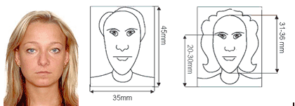

| 1. |
ЗАГАЛЬНІ ПРАВИЛА ЩОДО ВІЗ |
| 1.1 |
ЗАГАЛЬНА ІНФОРМАЦІЯ |
Посольство Чеської Республіки із задоволенням повідомляє про відкриття Візових центрів в Києві, Львові, Івано-Франківську,Дніпропетровську, Одесі, Ужгороді та Харкові (з 04.01.2016)..
Цей сайт надає інформаційну підтримку в оформленні віз громадянам України, а також громадянам інших країн, які легально проживають в Україні, і бажають отримати візу до Чеської Республіки з терміном перебування не більше ніж 90 днів у 180-денний термін.
Громадянам України, які планують відвідати Чеську Республіку, необхідно відкривати тимчасову візу в Чехію.
Правило подачі у консульство Чехії дійсне у тому випадку коли Чехія є пріоритетною країною перебування.
Короткострокова віза дозволяє проїжджати через територію Чеської Республіки транзитом або відвідати Чеську Республіку на обмежений період часу (не більше 90 днів у 180-денний термін).
Якщо Ви плануєте перебувати в Чеській Республіці більш довгий період часу (більше 90 днів у 180-денний термін), Вам необхідно отримати довгострокову візу або дозвіл на проживання безпосередньо в Консульстві Чеської Республіки.
Дипломатична місія Чеської Республіки може видати короткострокову шенгенську візу в разі:
1. Чехія є основною і єдиною країною відвідування;
2. Якщо термін перебування в Чехії більший, ніж в інших державах Шенгенської зони.
Заявка має бути подана не раніше ніж за 3 місяці до передбачуваної подорожі в Чехію, але не пізніше, ніж за 15 днів до поїздки.
Термін дії короткострокової шенгенської візи визначається відповідно з довжиною подорожі, але на строк не більше 5 років. Виходячи з кількості в'їздів віза може бути видана на:
Одноразова віза - дає право на один в'їзд і безперервне перебування протягом періоду, зазначеного на візі, але не більше 90 днів.
Дворазова віза - дає право на два в'їзди і безперервне перебування протягом періоду, зазначеного на візі, але не більше 90 днів у 180-денний термін.
Багаторазова віза - дає право на необмежену кількість в'їздів і безперервне перебування протягом періоду, зазначеного на візі, але не більше 90 днів.
Особливі правила Чеської Республіки для громадян України:
Якщо у заявника була хоч одна шенгенська віза (не залежно за який період , не залежно від того яке Посольство її видало), заявники мають право просити мульти візу на 1 рік.
Правило ануляції візи:
- Під час подачі документів заявник хоче анулювати попередню візу і просить відразу ж нову чеську візу.
- Заявник подавав документи у ВЦ, отримав паспорт з візою, але не може поїхати з якихось обставин і бажає анулювати візу (в такому випадку він нічого не платить).
- Заявник не подавав документи у ВЦ, а подавав у Консульство безпосередньо і тепер хоче через ВЦ анулювати візу, то в такому випадку йому необхідно або ж звернутися відразу в Консульство або ВЦ прийме паспорт, але йому необхідно буде сплатити повний сервісний збір.
У разі відмови у видачі візи, заявник у конверті разом із закордонним паспортом знайде лист-почяснення, видане Консульством ЧР. Заявник має право подати на апеляцію протягом 15 днів після отримання паспорту на руки або подавати повторно документи на відкриття нової візи. Щодо апеляції необхідно звертатися відразу до Консульства. Подавати документи повторно можливо навість вже на наступний день.
Земляки: мають право подавати документи у будь-який ВЦ без поперднього запису.
Без візової історії мають право просити мульти візу на 1 рік.
Далі від одного до двох років
Від двох до п’яти років.
Зверніть увагу, що даним заявники необхідно обирати категорію візи в залежності від мети візиту.
Заява на отримання візи може бути подано протягом 3 місяців до запланованої дати поїздки. Термін розгляду становить 7 - 10 календарних днів, але може бути продовжений до 30 днів на розсуд Консульства і без пояснення причин.
Всі документи необхідно подавати до Візового центру Чехії в Україні відповідно до конкретної Юрисдикції. Всі документи, що подаються до Візового Центру, будуть передані в Консульство Чеської Республіки для розгляду та прийняття рішення. Працівники Візового Центру жодним чином не впливають на рішення Консульства.
Згідно з рішенням, прийнятим Міністерством закордонних справ Чеської Республіки, з 18 квітня 2011р. в третіх країнах, де Чеська Республіка має кілька представницьких органів, заявники можуть подавати заяву на видачу візи тільки в той представницький орган, в рамках консульського округу якого вони мають дозвіл на постійне або тимчасове проживання.
Консульські округи представницьких та консульських установ Чеської Республіки в Україні визначені наступним чином:
1. Консульський відділ Посольства Чеської Республіки в Києві:
Вінницька, Житомирська, Київська, Кіровоградська, Миколаївська, Одеська, Полтавська, Сумська, Хмельницька, Черкаська, Чернігівська області.
Заявники, які проживають в даних областях, можуть подати документи до Візового Центру м. Київ, Одеса, Дніпропетровськ, Харків (з 04.01.16).
2. Генеральне Консульство Чеської Республіки у Львові:
Волинська, Івано-Франківська, Львівська, Закарпатська, Рівненська, Тернопільська та Чернівецька області.
Заявники, які проживають в даних областях, можуть подати документи до Візового Центру м. Львів, Івано-Франківськ або Ужгород.
3. Генеральне Консульство Чеської Республіки у Донецьку:
Донецька, Дніпропетровська, Запорізька, Луганська, Харківська, Херсонська області, а також Севастополь і Автономна Республіка Крим.
Заявники, які проживають в даних областях, можуть подати документи до Візового Центру м. Київ, Одеса, Дніпропетровськ, Харків (з 04.01.16).
Приклад: Якщо заявник прописан у Київській області, але постійно працює (навчається) та проживає у Тернопільській, він може подати документи до ВЦ Львову або Ужгороду, але обовязково має бути надане підтвердження працевлаштування або навчання у даному регіоні.
Якщо подають документи групи і хоча б одна людина має прописку котра не відноситься до округу подачі – їх не можуть прийняти!
Таким заявникам потрібно або подавати документи в своєму окрузі або зв’язуватись з консульством і уточнювати чи можуть їх прийняти.
Обрана заявником візова категорія повинна відповідати меті поїздки до Чехії. Виключно заявник обирає категорію візи - працівники Візового Центру не уповноважені допомагати в цьому.
У разі виникнення будь-яких питань щодо візової заяви, Консульство Чехії має право викликати заявника на додаткову співбесіду або запросити надати додаткові документи.
У зв'язку із Законом України «Про персональні дані» вводиться обов'язковий для підпису документ «Згода на обробку персональних даних» для кожного заявника (за неповнолітніх заявників підписують батьки / законні опікуни). Звертаємо увагу, що заявники, що подають документи через довірену особу, також повинні підготувати даний документ заздалегідь.
Кому не потрібна віза:
Особам з дипломатичними паспортами, в яких офіційна мета візиту.
З 14 березня 2016 Посольство Чеської Республіки в Україні і Генеральне консульство Чеської Республіки у Львові припиняє співпрацю з акредитованими туристичними компаніями. Заявники на шенгенські візи також і в подальшому зможуть з документами цих та інших туристичних компаній подавати свої заяви на шенгенські візи, але тільки самостійно.
|
| 2. |
ПРОЦЕС ПОДАЧІ ЗАЯВИ |
| 2.1 |
ПРОЦЕС ПОДАЧІ ЗАЯВИ |
Перед тим як подавати документи, будь ласка, переконайтеся, що Ви правильно визначилися з метою Вашого візиту - пам'ятайте, що ми готові допомогти Вам на всіх етапах отримання візи, але ми не можемо радити, на яку категорію візи подавати документи.
У зв'язку з тим, що наша робота є виключно адміністративної, ми не можемо гарантувати, що Ви отримаєте візу, а також термін розгляду документів, оскільки це є прерогативою Консульства Чеської Республіки.
Візові Центри Консульства Чеської Республіки працюють з 8.30 до 15.30 з понеділка по п'ятницю, крім вихідних та святкових днів.
Будь ласка, переконайтеся, що Ви ознайомилися з правилами безпеки перед тим, як відвідати Візовий Центр. З'явитеся до Візового Центру в робочий день і подайте заповнену анкету та необхідні документи.
Після подачі документів менеджер Візового Центру видасть Вам чек з необхідною сумою до оплати (візовий збір + сервісний збір) і якщо заявник побажає замовити додаткові послуги (кур'єрська доставка, заповнення анкети, фото кабіна), суми також потрібно буде оплатити в касі Візового Центру. Візовий збір сплачується у Евро у касі Візового Центру (Київ та Ужгород), або у найближчому відділені банку (Одеса, Дніпропетровськ, Львів). Сервісний збір сплачується у національній валюті (гривнях). Карткою розраховуватися можливо лише за сервісний збір, візовий сплачується лише готівкою. Після подачі документів співробітник ВЦ видасть чек та направить до відділення банка для оплати чеку.
У зв'язку з Законом України «Про персональні дані» вводиться обов'язковий для підпису документ «Згода на обробку персональних даних» для кожного заявника (за неповнолітніх заявників підписують батьки / законні опікуни). Звертаємо увагу, що заявники, що подають документи через довірену особу, також повинні підготувати даний документ заздалегідь.
Заявники котрі можуть подавати документи у Посольство напряму:
Земляки/краяни
Подружжя громадян ЄС та ЧР
Якщо заявник бажає дізнатися чи може подати документи до Консульства напрямую, надаються контакти Консульства і заявник дізнається це самостійно.
Стосовно національної візи Д також заявники направляються на Консульство.
|
| 2.2 |
ПРАВИЛА ЗАПИСУ |
Кожен заявник (індивідуал) повинен бути записаний у ВЦ.
Записувати можливо не по одному, а 15 і система приймає однакові паспорти, якщо дитина вписана у закордонний паспорт батьків.
Якщо звертаються групи для запису до 10 людей вони повинні записуватись через систему! Від 10 і більше можна запитом.
Увага: Для того, щоб записати групу не потрібно надавати електронну адресу ВЦ, а необхідно відправляти запити з інформацією нижче:
- Назва групи:
- Кількість заявників:
- мета поїздки:
- Бажана дата та час подання документів:
- Планована дата виїзду:
- Прізвище, ім’я, телефон та електронна адреса представника:
- У який ВЦ будуть подавати:
Якщо подають документи групи і хоча б одна людина має прописку котра не відноситься до округу подачі – їх не можуть прийняти!
Таким заявникам потрібно або подавати документи в своєму окрузі або зв’язуватись з консульством і уточнювати чи можуть їх прийняти.
З 14 березня 2016 Посольство Чеської Республіки в Україні і Генеральне консульство Чеської Республіки у Львові припиняє співпрацю з акредитованими туристичними компаніями. Заявники на шенгенські візи також і в подальшому зможуть з документами цих та інших туристичних компаній подавати свої заяви на шенгенські візи, але тільки самостійно.
|
| 2.3 |
ПРАВИЛА ПОДАЧІ ДОКУМЕНТІВ |
Візова анкета може бути подана:
Починаючи з 23 червня 2015 року всі заявники повинні будуть з'явитися особисто в консульство/ВЦ, щоб надати свої біометричні дані (відбитки пальців та цифрову фотографію). Дана процедура стосується, зокрема, заявок на короткострокові Шенгенські візи (із максимальним дозволом на перебування у 90 днів з кожних 180 днів).
Винятки від зобов'язання надавати відбитки пальців стосуються таких категорій:
- Діти, молодші 12 років;
- Особи, у яких фізично неможливо взяти відбитки пальців; Особи, у яких фізично неможливо взяти відбитки пальців - це тільки ті люди, у яких немає 2 руки. Всі інші повинні здавати відбитки (навіть інваліди і т.д.).
- Голови держави та члени національних урядів (а також члени їхніх офіційних делегацій та їхні чоловіки/дружини), якщо вони подорожують з офіційними цілями.
Для всіх подальших заяв на отримання візи, що будуть подаватися протягом 5 років після цієї процедури, відбитки пальців заявника копіюватимуться з інформації, яка міститься в системі ВІС з попередньої заявки. Іншими словами, відбитки пальців надаються на період у 5 років; і ці відбитки чинні для будь-якої подальшої заявки на Шенгенську візу протягом 5-річного періоду (наприклад, заявки на довготермінову багаторазову візу).
З 15 років заявники можуть подавати документи, тільки в присутності батьків або третьої особи з нотаріальним дорученням від них.
Нотаріальна довіреність на подачу повинна містити інформацію про виїзд / приїзд дитини і подачу документів. Присутність третьої особи обов'язкова при подачі.
З 15 років заявники повинні бути присутніми на подачі документів, незалежно від того здавали біометричні дані чи ні.
Кожен заявник зобов’язаний особисто подавати документи у ВЦ згідно прописки.
З 14 березня 2016 Посольство Чеської Республіки в Україні і Генеральне консульство Чеської Республіки у Львові припиняє співпрацю з акредитованими туристичними компаніями. Заявники на шенгенські візи також і в подальшому зможуть з документами цих та інших туристичних компаній подавати свої заяви на шенгенські візи, але тільки самостійно.
Неповнолітні заявники:
За неповнолітніх заявників подають документи тільки батьки та офіційні опікуни.
Якщо подорожує група дітей по категорії культура, спорт, тоді за них може подати документи представник організації/федерації при наявності доручення на фірмовому бланку. Обовязково має бути надане свідоцтво про народження дитини, копії паспортів батьків та дозвіл на виїзд.
За заявника котрий є краянином (чеське походження) може подати документи представник асоціації (діаспори) по дорученню котре оформляється у асоціації без завірення.
Усі заявники, готуючи апкет документів мають оформити страховий поліс лише у акредитованих в Україні страхових компаніях. Страховка від руки не приймається. Якщо у старховці допущена хоча б одна помилка в паспортних даних, страховка не буде прийнята. Страховка має бути надана в оригіналі! Чеські страховки приймаються.
Перелік акредитованих страхових компаній в Україні:
- allianz Украина
- АЗИНКО (ex.АЗОВ)
- АВАНГАРД
- АВЕСТА страхування
- АЕЛІТА
- АІГ Украина страхова компания
- АКВ ГАРАНТ
- АКСОР
- АКТИВ-ГАРАНТ
- АЛЬФА СТРАХУВАННЯ
- АЛЬФА-ГАРАНТ
- АЛЬЯНС
- АРМА
- АРСЕНАЛ СТРАХУВАННЯ
- АСКА
- АСКО - Медсервіс
- АХА Страхування
- Аста Страхування
- БРОКБІЗНЕС
- ВЕЛТА (КИЇВ)
- ВЕЛТА (ХАРКІВ)
- ВЕЛТЛІНЕР (ех Страховий дом ЄВРОПЕЙСКИЙ СВІТ)
- ВОЄННО-СТРАХОВА КОМПАНІЯ
- В.і.П СТРАХОВА КОМПАНИЯ
- ВУСО
- Галицька
- ГАРАНТ-СИСТЕМА
- ГАРАНТІЯ (ЧЕРНІГІВ)
- Гарант і я
- Глобал Гарант
- ГЛОБУС
- ГРАВЕ УКРАЇНА
- ГУТА-Украина
- ДІСКО
- ДОБРОБУТ та ЗАХИСТ
- ДОМІНАНТ
- ДОМІНАНТА
- ЕЙЕМДЖИ Груп
- ЕККО Страхування
- ЕКСПО Страхування
- ЕТАЛОН
- ЕТАЛОН-ПОЛІС
- ЕУРОПА.УА
- ЄВРОПЕЙСКЕ ТУРИСТИЧНЕ СТРАХУВАННЯ
- ЄВРОПЕЙСКИЙ СТРАХОВИЙ АЛЬЯНС
- Європейский Страховий Союз
- ЗДОРОВО
- ЗЛАГОДА
- ІЛЛІЧЕВСЬКЕ
- ІНГО УКРАЇНА
- ІНДІГО
- ІНТЕР-ПОЛІС
- КАШТАН
- КИЇВ-РЕ
- КИЇВСКЕ СТРАХОВЕ ТОВАРИСТВО
- КИЇВСЬКИЙ СТРАХОВОЙ ДІМ
- КІЙ АВІА ГАРАНТ
- КНЯЖА ВІЄННА ІНШУРАНС ГРУП
- КРЕМЕНЬ
- КРИМСЬКА СТРАХОВА КОМПАНІЯ
- КРОНА
- МІЖДНАРОДНА СТРАХОВА КОМПАНІЯ
- МІсто
- Мотор-Гарант
- НОВА
- ОМЕГА
- ОРАНТА
- ОСТРА
- ПЕРША
- ПЗУ Україна
- ПОІНТ
- ПРОВІДНА
- ПРОВИТА
- ПРОМИСЛОВА СТРАХОВА КОМПАНІЯ
- ПРОСТО-Страхування
- ПРОФЕСІЙНЕ СТРАХУВАННЯ
- ПСК-ЗахІд
- РАРИТЕТ
- РЕСПЕКТ
- Саламандра-Украина
- САТІС
- СКАЙД
- СКАРБНИЦЯ
- СТАР-ПОЛІС
- СТАТУС
- СТРАХОВА КОМПАНІЯ 611
- Страховий будинок
- СТРАХОВІ ГАРАНТІЇ УКРАЇНИ
- СТРОЙПОЛИС
- ТАС Страхова Група
- ТАСТ-Гарантия
- ТЕКОМ
- УКРАЇНСКА ОХОРОННА СТРАХОВА КОМПАНІЯ
- УКРАЇНСКАЯ ПОЖЕЖНО-СТРАХОВА КОМПАНІЯ УПСК
- УКРАЇНСКАЯ СТРАХОВА ГРУПА
- УКРАЇНСКА ТРАНСПОРТНА СТРАХОВА КОМПАНІЯ ЮТІКО
- Українский страховой дім
- Українский страховой капітал
- УКРАЇНСКИЙ СТРАХОВОЙ СТАНДАРТ
- Український фінансовий альянс
- УКРФІНСТРАХ
- УНІВЕРСАЛЬНА
- УНІКА
- ФІНЕКС
- ФОРМІКА
- ХАРКІВСЬКА МУНІЦИПАЛЬНАЯ СТРАХОВА КОМПАНІЯ
- ХДІ СТРАХУВАННЯ
- ЦЕНТРАЛЬНА
- Ю.БІ.АЙ. СТРАХОВА ГРУПА
- Юнісон гарант
- ЮНІТІ
|
| 2.4 |
Правила отримання документів |
Після подачі документів Ви можете перевірити стан Вашої візової заяви, ввівши унікальний реєстраційний номер, який видається працівником Візового Центру після подачі документів, та дату народження.
Звертаємо Вашу увагу, що паспорт можна отримати з 8:30 до 15:30 з понеділка по п`ятницю, окрім святкових та вихідних днів
Отримання паспорту в ВЦ:
- Особисто
- При наявності доручення, котре оформлене у ВЦ (потрібно приходити на подачу з особою, котра буде отримувати паспорт)
При подачі документів заявник може заповнити довіреність на отримання на кого завгодно, але тільки ця людина повинна тоді бути присутнім у ВЦ
- По нотаріальному дорученню.
Отримувати паспорта можна тільки по дорученню з ВЦ, дорученню від компанії / організації / інституту / міністерства і т.д. або за нотаріальним. Зі свідоцтвом про шлюб не можна.
Заявники старше 15 років вже мають внутрішній паспорт – цим документом і посвідчують особу при отриманні паспорта.
Для того, щоб отримати паспорт у Візовому центрі заявнику необхідно надати наступні документи:
- Оригінал чека про сплату, який надав Вам менеджер після подачі документів.
- Внутрішній паспорт заявника (документ, що підтверджує особистість).
- Для неповнолітніх: свідоцтво про народження.
Якщо ви скористались послугою кур`єрської доставки, Вам необхідно буде надати наступні документи:
- Чек про сплату.
- Внутрішній паспорт заявника (документ, що підтверджує особистість).
З 16.01.2015 є можливість замовити кур’єрську доставку після подачі документів. Заявники повинні звертатися на електронну адресу ВЦ: <info.czech@vfshelpline.com
Реквізити:
Назва компанії: Приватне підприємство "ЮСН"
ЄДРПОУ: 38232886
Адреса компанії: 04080 м. Київ, вул. Фрунзе 60, Корпус V
Назва банку: : АТ Райффайзен Банк АВАЛЬ
Розрахунковий рахунок: 26005458688
МФО: 380805
Призначення платежу:
«За консультаційні послуги та консульський збір щодо оформлення чеської візи [Прізвище] [Ім'я] [Номер паспорту]»
Вартість послуги – 100 грн.
Оператору необхідно перевірити статус паспорта, якщо документи ще на розгляді або якщо паспорт вже знаходитися в ВЦ Києва чи Львова, то заявник може замовити кур'єрську доставку.
Якщо паспорта вже знаходяться в Одесі, Івано-Франківську,Дніпропетровську, Харкові чи Ужгороді, то тоді кур'єра вже не можна замовити.
СМС послуга тимчасово не працює. Не повідомляйте заявників про смс.
|
| 2.5 |
Забрати паспорт без візи |
Якщо заявники бажають забрати паспорт без візи з якої-небудь причини, це можливо зробити наступним чином: заявник приходить в ВЦ, пише заяву за зразком, заява передається на розгляд до Консульства і через кілька днів паспорт повертається.
|
| 2.6 |
Термін розгляду |
Рекомендується подавати заяви не пізніше, ніж за 15 днів до поїздки
Для громадян України – в середньому 7-10 календарних днів в більшості випадків, але може бути продовжений до 30 днів і більше.
(Для заявників, які подаються у ВЦ Ужгорода термін розгляду може бути на 1 день довше у зв’язку із транспортуванням документів з Ужгорода до Консульства у Львові).
Для громадян інших країн – як правило не менше 15 календарних днів, але може бути продовжено і до 60 днів.
Термінового розгляду немає.
|
| 2.7 |
ПРАВИЛА БЕЗПЕКИ |
Згідно правил безпеки діють наступні обмеження:
- Забороняється використання мобільних телефонів, ноутбуків, портативних преєрів, електронних книжок, фото/відеоапаратури та інших автономних електронних пристроїв, а також електронних носіїв інформації. За наявності вказаних пристроїв при відвідуванні Візового Центру, вони мають бути вимкнені.
- Забороняється відвідування Візового Центру у разі наявності при собі наступних предметів (незалежно від можливої наявності ліцензій або дозволів):
- Будь-які види вогнепальної, травматичної чи пневматичної зброї;
- Електрошокери, газові балончики та інші засоби самозахисту;
- Холодна зброя, колючо-ріжучі предмети, у тому числі побутового призначення;
- Вибухові, вибухонебезпечні і легкозаймисті речовини, піротехніка;
- Отруйні та токсичні речовини;
- Запаковані конверти, посилки, інші пакунки, що виключають можливість візуального встановлення змісту;
- Великогабаритні валізи, сумки, огляд яких може бути ускладнений через значний об’єм;
- Алкоголь і продукти харчування.
Зазначений перелік не є вичерпним. На розсуд співробітників Служби Безпеки відвідування Візового Центру за наявності інших предметів також може бути обмежено.
Дозволені предмети:
Папки, що містять Ваш паспорт та інші документи, що відносяться до процесу оформлення Візи, дозволяється проносити до Візового Центру тільки після відповідної перевірки Служби Безпеки.
Відвідування Візового Центру з перерахованими вище предметами заборонено, камера схову особистих речей відвідувачів у Візовому Центрі не передбачена, у зв'язку з чим Візовий Центр не може забезпечити зберігання, а так само нести відповідальність за збереження особистих речей відвідувачів. На підставі викладеного, просимо Вас самостійно і завчасно подбати про місце зберігання речей і предметів, за наявності яких забороняється відвідування Візового Центру.
Також звертаємо Вашу увагу на те, що у Візовий Центр не допускаються супроводжуючі - друзі, родичі, коллеги, тощо, за винятком випадків, коли присутність супроводжуючого необхідна (супровід літніх людей, інвалідів, дітей).
|
| 3. |
ОПЛАТИ |
| 3.1 |
Сервісний збір |
| Сервісний збір за одного заявника |
| 18 Євро (усі заявники) |
| Збір сплачується у гривнях у касі Візового Центру у відповідності до щотижневого курсу Євро, встановленого НБУ. Збір включає 20% ПДВ. |
Оплата кредитною карткою сервісного збору доступна у Візових Центрах м. Київ, Львів та Одеса.
Послуга обміну валют доступна у Візових Центрах м. Київ та Ужгород.
|
| 3.2 |
ВІзовий збір |
| Консульський збір за одного заявника |
| 35 Євро* (Віза для громадян України, Російської Федерації, Молдови, Вірменії, Грузії, Сербії, Македонії, Азербайджану, Боснії та Герцеговини відповідно до Угоди про спрощений візовий режим) |
| 60 Євро* (Для громадян інших країн) |
| Збір сплачуються у Євро у касі Візового Центру (ВЦ Києва та Ужгорода). В інших ВЦ видається чек про оплату після подачі документів і заявники сплачують збори у найближчому відділені Idea банку (співробітники ВЦ направлять). Банк додатково стягує комісію з кожного заявника за послуги банку у розмірі 20 грн. |
УВАГА: На підставі одностороннього рішення Чеської Республіки усі громадяни України віком до 26 років, пенсіонери при наявності пенсійного посвідчення, а також інваліди всіх груп (можна в копії), члени сім’ї ЄС та Швейцарії - безкоштовно (при наявності відповідних документів), краяни – безкоштовно (при наявності відповідних документів).
Для громадян інших країн оплата візового збору складає:
До 6 років – безкоштовно
Оплата ВЗ виключно в ЄВРО.
|
| 3.3 |
Додаткові послуги |
| Сума | Послуга |
| 100,00 грн. | Кур’єрська послуга, яка замовляється у Візовому Центрі при подачі документів та після подачі документів |
| 50,00 грн. | Фото кабіна (6 фотографій). |
| 75,00 грн. | Послуга заповнення візової анкети. |
| Ціни немає (говорите по тарифу) | Cтрахування у ВЦ |
| Ціни немає | Є можливість придбати Грін Карту на автомобіль. |
|
| 3.4 |
Звільнені від оплати візового збору |
Згідно з Угодою про спрощення візового режиму між Україною та ЄС наступні громадяни України звільняються від оплати консульського збору:
- близькі родичі (подружжя, діти (в тому числі усиновлені) та батьки (в тому числі опікуни) громадян країн-членів ЄС або громадян України, які законно проживають на території країн-членів ЄС;
- члени офіційних делегацій, які на основі офіційного запрошення приймають участь у зустрічах, консультаціях, переговорах та програмах обміну, а також у заходах, які проводять міжурядові організації;
- члени національних та регіональних урядів та парламентів, конституційних та верховних судів;
- школярі, студенти, аспіранти та викладачі, які їх супроводжують на навчання або учбове стажування;
- інваліди та люди, які за необхідності їх супроводжують;
- особи, які здійснюють подорож з гуманітарних причин, а також з метою термінового медичного лікування разом з особами, що їх супроводжують. Також для присутності на похороні або відвідування важко хворого близького родича;
- учасники молодіжних міжнародних спортивних заходів, а також люди, що їх супроводжують;
- особи, які беруть участь у науковій, культурній та творчій діяльності, включаючи університетські та інші програми обміну;
- особи, які беруть участь в офіційних програмах обміну між містами-побратимами;
- журналісти та технічна команда, яка супроводжує їх;
- пенсіонери (тільки громадяни України);
- водії - перевізники товару у міжнародному русі, а також водії транспортних пасажирських перевезень, які прямують на територію Євросоюзу засобами, зареєстрованими в Україні;
- члени команд поїздів, вагонів-рефрежираторів i локомотивів у міжнародних потягах, що прямують на територію держав Євросоюзу;
діти до 18 років, а також особи до 21 року, які залишаються на утриманні батьків;
- представники релігійних комун;
- представники професій, які беруть участь у міжнародних виставках, конференціях, симпозіумах, семінарах чи інших подібних закладах, які проводяться на територіях країн-членів Євросоюзу;
- учасники віком до 25 років, які беруть участь у конференціях, семінарах, спортивних, культурних та освітніх заходах, що проводяться некомерційними організаціями;
- представники громадських організацій, які подорожують з метою освітньої підготовки, семінарів, конференцій, у тому числі в рамках програм обміну;
- учасники програм прикордонного співробітництва Європейського союзу, таких як Європейське Сусідство;
Інші національності:
громадяни усіх інших держав віком до 6 років. |
| 4 |
КАТЕГОРІЇ ВІЗ |
| 4.1 |
КОРОТКОСТРОКОВА ВІЗА |
Перелік візових категорій:
Туризм: Цей тип візи відноситься до тих заявників, які їдуть до Чеської Республіки з метою туризму. Візит до друзів чи родичів: Скористатися цією візою мають право заявники, які бажають відвідати близьких родичів або друзів, які легально проживають в Чеській Республіці. Бізнес: Дана візова категорія підходить заявникам, які подорожують з метою бізнесу (комерційною метою). Офіційний візит: Скористатися цією візою мають право заявники, які бажають відвідати Чеську Республіку в службових цілях. Заявники даної категорії - члени офіційних делегацій, які планують брати участь у зустрічах, консультаціях, переговорах або програмах обміну. Спорт: Скористатися цією візою мають право заявники, які беруть участь у спортивних заходах в Чеській Республіці, а також особи, що їх супроводжують з професійних причин. Культурні, наукові та мистецькі заходи: Дана категорія візи призначена для бажаючих відвідати культурний, науковий або мистецький захід, який проходитиме в Чеській Республіці. Медичне лікування: Скористатися цією візою мають право заявники, які бажають відвідати Чеську Республіку з метою лікування. Навчання/працевлаштування: Дана категорія візи призначена для бажаючих відвідати Чеську Республіку з метою навчання або роботи (також сезонних робіт). Віза для водіїв: Дана візова категорія призначена для водіїв, які здійснюють міжнародні перевезення вантажу, а також пасажирські перевезення на транспортному засобі, зареєстрованому на території України. Віза для журналістів: Скористатися даною візою мають право заявники, які є кваліфікованими журналістами і їдуть в Чехію з журналістської метою. Чеські співвітчизники: Дана візова категорія призначена для громадян України, які мають чеське походження.
З 1 квітня 2015р. ВЦ Чехії в усіх регіонах не буде більше приймати неповний пакет документів. Якщо у заявника буде відсутній хоча б один пункт з переліку – у прийомі буде відмовлено.
Заявник повинен надати абсолютно всі документи по переліку необхідних на сайті. |
| 4.2 |
ТУРИЗМ |
Цей тип візи відноситься до тих заявників, які планують відвідати Чехію з метою туризму.
З 1 квітня 2015р. ВЦ Чехії в усіх регіонах не буде більше приймати неповний пакет документів. Якщо у заявника буде відсутній хоча б один пункт з переліку – у прийомі буде відмовлено.
Дана віза дає право громадянам України та громадянам інших країн, які легально проживають в Україні, відвідати Чеську Республіку протягом обмеженого періоду часу, що не перевищує 90 днів в 180-денний термін.
Увага! Турагентства не можуть подавати документи для отримання туристичної МУЛЬТИВІЗИ, лише індивідуали.
Візова анкета може бути подана:
Починаючи з 23 червня 2015 року всі заявники повинні будуть з'явитися особисто в консульство/ВЦ, щоб надати свої біометричні дані (відбитки пальців та цифрову фотографію). Дана процедура стосується, зокрема, заявок на короткострокові Шенгенські візи (із максимальним дозволом на перебування у 90 днів з кожних 180 днів).
Винятки від зобов'язання надавати відбитки пальців стосуються таких категорій:
- Діти, молодші 12 років;
- Особи, у яких фізично неможливо взяти відбитки пальців; Особи, у яких фізично неможливо взяти відбитки пальців - це тільки ті люди, у яких немає 2 руки. Всі інші повинні здавати відбитки (навіть інваліди і т.д.).
- Голови держави та члени національних урядів (а також члени їхніх офіційних делегацій та їхні чоловіки/дружини), якщо вони подорожують з офіційними цілями.
Для всіх подальших заяв на отримання візи, що будуть подаватися протягом 5 років після цієї процедури, відбитки пальців заявника копіюватимуться з інформації, яка міститься в системі ВІС з попередньої заявки. Іншими словами, відбитки пальців надаються на період у 5 років; і ці відбитки чинні для будь-якої подальшої заявки на Шенгенську візу протягом 5-річного періоду (наприклад, заявки на довготермінову багаторазову візу).
Якщо заявник здавав біометрію впродовж останніх 5 років подавати може:
- За неповнолітніх заявників документи подають батьки або офіційні опікуни. Але з 15-ти років діти повинні бути присутні з кимось із батьків або 3-ю особою.
НЕОБХІДНІ ДОКУМЕНТИ
Візова анкета.
- Заповнена та підписана особисто заявником (за неповнолітніх дітей до 15 років заповнюють батьки або офіційні опікуни).
- Заповнюється латинськими буквами.
Всі діючі закордонні паспорти або проїзний документ.
- Паспорти повиненні бути надані в оригіналі. Якщо у заявника є два діючі паспорти то два паспорти буде вилучено на період розгляду, є можливість щоб другий паспорт заявнику повернули (у випадку якщо у нього запланована поїздка), в такому випадку він повинен проїнформувати про це співробітника ВЦ під час подачі. Заявнику паспорт можуть повернути на наступний робочий день. Для регіональних ВЦ: на другий робочий день.
- Копія всіх сторінок з відмітками, а також попередніх шенгенськими віз.
- Не старше 10 років (продовжені паспорти не приймаються).
- Термін дії паспорту повинен бути мінімально 3 місяці після закінчення терміну дії візи.
- Паспорт повинен мати мінімум 2 (дві) вільні сторінки (не обов’язково розворот).
- Оригінал і копію всіх сторінок з відмітками внутрішнього паспорта або оригінал і копію ID карти з оригіналом і копією довідки про реєстрацію / перебування особи.
Одна кольорова фотографія.
- Розмір 35 х 45 мм.
- Білий фон.
- Зроблена не більше 6 місяців тому назад.
Медичний страховий поліс.
- Покриття 30,000 Євро, нульова франшиза.
- Територія дії - всі країни Шенгенської зони.
- У разі подання документів на багаторазову візу, страховий поліс повинен покривати або увесь термін або першу поїздку, але в такому випадку обовязково має бути третій підпис в анкеті.
- При подачі документів на одноразовуабо дворазову візу, страховий поліс повинен покривати термін поїздки + 15 днів.
- Страховий поліс повинен бути оформлений тільки в акредитованих страхових компаніях України.
УВАГА: Страховий поліс повинен бути заповнений на комп'ютері і роздрукований на принтері або ж заповнений на друкарській машинці. Страховка, заповнена від руки, не буде прийматися.Підтвердження мети поїздки (оригінал + копія).
Вимоги до підтвердження з готелю:
Туризм (індивідуальна подача):
Підходять будь-які резервації готелю. З букінг ком, також приймається. Вказується період перебування в готелі/апартаментах.
Якщо подорожує декілька заявників (наприклад 5) то, як правило, в резервації вказується тільки ФІО людини котра бронювала готель, важливо щоб було прописано, що у номері буде ще +4 заявники. Їх дані прописувати не обов’язково.
Якщо резервують кемпінг – то надають підтвердження (будь-яке) резервації місць у кемпінгу.
Якщо резервують місце на фестивалі – підтвердження від організаторів фестивалю, що заброньоване місце.
Попередня оплата не потрібна.
Детальний план подорожі.
Туризм (подача ТА):
Ваучер на тур може придбаний не тільки в Україні.
- Організований туризм (через акредитовані туристичні агенції) - підтвердження замовлення на поїздку від приймаючої організації (ваучер). В ваучері повинні бути вказані паспортні дані подорожуючих (ім'я, прізвище, дані про оплату послуг на території ЧР), печатка організації, яка видавала ваучер і підпис відповідальної людини.
Підтвердження транспортного засобу.
- Бронювання автобусних, залізничних або авіаквитків.
- Водійське посвідчення міжнародного зразка, документи на транспортний засіб (водійські права та тех. Паспорт) та Грін карта.
Підтвердження зайнятості / діяльності та доходів.
- Для працюючих осіб - довідка з місця роботи, в якій вказана посада, заробітна плата за останні шість місяців, дата прийому на роботу і затверджений період відпустки. У довідці має бути вказано ім'я і посаду людину, яка підписала довідку, а також реєстраційні та контактні дані компанії. Додатково може знадобитися трудова книжка.
- Для приватних підприємців - ліцензія, реєстраційне свідоцтво та остання податкова декларація.
- Для пенсіонерів - пенсійне посвідчення і документ про розмір пенсії.
- Для студентів та учнів - підтвердження від навчального закладу з підтвердженням відпустки. Додатково може знадобитися студентська заліковка. На період канікул можна не надавати довідку зі школи.
- Для не працюючих осіб - письмове роз’яснення про фінансове становище заявника, підписане особисто заявником. Також можна надати копію трудової книги з минулих офіційних місць роботи.
Підтвердження достатніх фінансових коштів для покриття витрат під час поїздки.
- Банківський рахунок, який підтверджує достатність коштів і транзакції за останні 3 місяці.
- Підписані дорожні чеки на ім'я заявника - оригінал і копія.
- Спонсорство:
У всіх випадках спонсорство НОТАРІАЛЬНЕ. Подається для всіх, як для дітей від батьків, так і від третьої особи. Може бути оформлене одне на всіх (тоді подається оригінал, та його копії в кожен пакет документів). Спонсором може бути будь хто. Потрібно надавати доходи спонсора.
Спонсорство (для дорослих і дітей) і дозвіл на виїзд для дітей повинні покривати повністю термін дії візи котру будуть просити (якщо на два роки - то на два і т.д.) - Додаткові документи для дітей до 18 років, які подорожують самостійно або тільки в супроводі одного з батьків.
- Письмова згода одного / обох батьків (якщо вони не їдуть з дитиною) - документ повинен бути нотаріально завірений, подається оригінал і копія. У разі якщо є тільки один опікун, потрібне свідоцтво про народження, судове рішення про опікунство, свідоцтво про смерть або інший документ, який підтверджує реальний стан речей.
- Копія закордонного і внутрішнього паспорта батьків.
- Свідоцтво про народження - оригінал та копія.
Громадянам інших країн потрібно подати реєстрацію або дозвіл на проживання на території України. Даний документ повинен бути дійсний ще 3 місяці після закінчення дії візи.
Обов’язково має бути надана Письмова згода на обробку персональних даних.
Генеральне консульство має право вимагати будь-які інші документи, які підтверджують дані, зазначені в анкеті, і на підтвердження мети перебування, фінансового, соціального стану та стану здоров'я і т.д. Генеральне консульство також має право викликати заявника на співбесіду.
У разі відсутності хоча б одного документу із вище перерахованих пунктів, пакет документів буде вважатися неповним.
|
| 4.3 |
Культурні, наукові та мистецькі заходи |
Дана категорія візи призначена для бажаючих відвідати культурний, науковий або мистецький захід, який проходитиме в Чеській Республіці.
З 1 квітня 2015р. ВЦ Чехії в усіх регіонах не буде більше приймати неповний пакет документів. Якщо у заявника буде відсутній хоча б один пункт з переліку – у прийомі буде відмовлено.
Дана віза дає право громадянам України та громадянам інших країн, які легально проживають в Україні, відвідати Чеську Республіку протягом обмеженого періоду часу, що не перевищує 90 днів в 180-денний термін.
Візова анкета може бути подана:
Починаючи з 23 червня 2015 року всі заявники повинні будуть з'явитися особисто в консульство/ВЦ, щоб надати свої біометричні дані (відбитки пальців та цифрову фотографію). Дана процедура стосується, зокрема, заявок на короткострокові Шенгенські візи (із максимальним дозволом на перебування у 90 днів з кожних 180 днів).
Винятки від зобов'язання надавати відбитки пальців стосуються таких категорій:
- Діти, молодші 12 років;
- Особи, у яких фізично неможливо взяти відбитки пальців; Особи, у яких фізично неможливо взяти відбитки пальців - це тільки ті люди, у яких немає 2 руки. Всі інші повинні здавати відбитки (навіть інваліди і т.д.).
- Голови держави та члени національних урядів (а також члени їхніх офіційних делегацій та їхні чоловіки/дружини), якщо вони подорожують з офіційними цілями.
Для всіх подальших заяв на отримання візи, що будуть подаватися протягом 5 років після цієї процедури, відбитки пальців заявника копіюватимуться з інформації, яка міститься в системі ВІС з попередньої заявки. Іншими словами, відбитки пальців надаються на період у 5 років; і ці відбитки чинні для будь-якої подальшої заявки на Шенгенську візу протягом 5-річного періоду (наприклад, заявки на довготермінову багаторазову візу).
Якщо заявник здавав біометрію впродовж останніх 5 років подавати може:
- Якщо подорожує група дітей по категорії культура, спорт, тоді за них може подати документи представник організації/федерації при наявності доручення на фірмовому бланку.
НЕОБХІДНІ ДОКУМЕНТИ
Візова анкета.
- Заповнена та підписана особисто заявником (за неповнолітніх дітей до 15 років заповнюють батьки або офіційні опікуни).
- Заповнюється латинськими буквами.
Всі діючі закордонні паспорти або проїзний документ.
- Паспорти повиненні бути надані в оригіналі. Якщо у заявника є два діючі паспорти то два паспорти буде вилучено на період розгляду, є можливість щоб другий паспорт заявнику повернули (у випадку якщо у нього запланована поїздка), в такому випадку він повинен проїнформувати про це співробітника ВЦ під час подачі. Заявнику паспорт можуть повернути на наступний робочий день. Для регіональних ВЦ: на другий робочий день.
- Копія всіх сторінок з відмітками, а також попередніх шенгенськими віз.
- Не старше 10 років (продовжені паспорти не приймаються).
- Термін дії паспорту повинен бути мінімально 3 місяці після закінчення терміну дії візи.
- Паспорт повинен мати мінімум 2 (дві) вільні сторінки (не обов’язково розворот).
- Оригінал і копію всіх сторінок з відмітками внутрішнього паспорта або оригінал і копію ID карти з оригіналом і копією довідки про реєстрацію / перебування особи.
Одна кольорова фотографія.
- Розмір 35 х 45 мм.
- Білий фон.
- Зроблена не більше 6 місяців тому назад.
Медичний страховий поліс.
- Покриття 30,000 Євро, нульова франшиза.
- Територія дії - всі країни Шенгенської зони.
- У разі подання документів на багаторазову візу, страховий поліс повинен покривати або увесь термін або першу поїздку, але в такому випадку обовязково має бути третій підпис в анкеті.
- При подачі документів на одноразовуабо дворазову візу, страховий поліс повинен покривати термін поїздки + 15 днів.
- Страховий поліс повинен бути оформлений тільки в акредитованих страхових компаніях України.
УВАГА: Страховий поліс повинен бути заповнений на комп'ютері і роздрукований на принтері або ж заповнений на друкарській машинці. Страховка, заповнена від руки, не буде прийматися.Підтвердження мети поїздки (оригінал + копія або копія).
- Запрошення від приймаючої сторони в Чеській Республіці.
Потрібно надати запрошення від організатора в якому вказуються, персональні дані заявника, мета візиту, терміни поїздки, кількість запланованих в’їздів, деталі щодо заходу, адреса, підпис та ім’я особи котра підписала запрошення, печатка, деталі щодо того чи буде брати на себе запрошуюча сторона витрати.
- Бронювання готелю чи інше підтвердження проживання, якщо воно не забезпечується стороною, що запрошує.
Підтвердження транспортного засобу.
- Бронювання автобусних, залізничних або авіаквитків.
- Водійське посвідчення міжнародного зразка, документи на транспортний засіб (водійські права та тех. Паспорт) та Грін карта.
Підтвердження зайнятості / діяльності та доходів.
- Для працюючих осіб - довідка з місця роботи, в якій вказана посада, заробітна плата за останні шість місяців, дата прийому на роботу і затверджений період відпустки. У довідці має бути вказано ім'я і посаду людину, яка підписала довідку, а також реєстраційні та контактні дані компанії. Додатково може знадобитися трудова книжка.
- Для приватних підприємців - ліцензія, реєстраційне свідоцтво та остання податкова декларація.
- Для пенсіонерів - пенсійне посвідчення і документ про розмір пенсії.
- Для студентів та учнів - підтвердження від навчального закладу з підтвердженням відпустки. Додатково може знадобитися студентська заліковка. На період канікул можна не надавати довідку зі школи.
- Для не працюючих осіб - письмове роз’яснення про фінансове становище заявника, підписане особисто заявником. Також можна надати копію трудової книги з минулих офіційних місць роботи.
Підтвердження достатніх фінансових коштів для покриття витрат під час поїздки.
- Банківський рахунок, який підтверджує достатність коштів і транзакції за останні 3 місяці.
- Підписані дорожні чеки на ім'я заявника - оригінал і копія.
- Спонсорство: Якщо у запрошенні буде прописано, що всі витрати забезпечені, тоді фінанси заявника не надаються, але все-ж-таки Консульство залишає за собою право у разі необхідності запросити.
Спонсорство (для дорослих і дітей) і дозвіл на виїзд для дітей повинні покривати повністю термін дії візи котру будуть просити (якщо на два роки - то на два і т.д.) - Додаткові документи для дітей до 18 років, які подорожують самостійно або тільки в супроводі одного з батьків.
- Письмова згода одного / обох батьків (якщо вони не їдуть з дитиною) - документ повинен бути нотаріально завірений, подається оригінал і копія. У разі якщо є тільки один опікун, потрібне свідоцтво про народження, судове рішення про опікунство, свідоцтво про смерть або інший документ, який підтверджує реальний стан речей.
- Копія закордонного і внутрішнього паспорта батьків.
- Свідоцтво про народження - оригінал та копія.
Громадянам інших країн потрібно подати реєстрацію або дозвіл на проживання на території України. Даний документ повинен бути дійсний ще 3 місяці після закінчення дії візи.
Обов’язково має бути надана Письмова згода на обробку персональних даних.
Генеральне консульство має право вимагати будь-які інші документи, які підтверджують дані, зазначені в анкеті, і на підтвердження мети перебування, фінансового, соціального стану та стану здоров'я і т.д. Генеральне консульство також має право викликати заявника на співбесіду.
У разі відсутності хоча б одного документу із вище перерахованих пунктів, пакет документів буде вважатися неповним. |
| 4.4 |
СПОРТ |
Дана візова категорія належить до тих заявників, які планують відвідати Чеську Республіку з метою участі в спортивних заходах, а також до заявників, які їх супроводжують з професійних причин.
З 1 квітня 2015р. ВЦ Чехії в усіх регіонах не буде більше приймати неповний пакет документів. Якщо у заявника буде відсутній хоча б один пункт з переліку – у прийомі буде відмовлено.
Дана віза дає право громадянам України та громадянам інших країн, які легально проживають в Україні, відвідати Чеську Республіку протягом обмеженого періоду часу, що не перевищує 90 днів в 180-денний термін.
Візова анкета може бути подана:
Починаючи з 23 червня 2015 року всі заявники повинні будуть з'явитися особисто в консульство/ВЦ, щоб надати свої біометричні дані (відбитки пальців та цифрову фотографію). Дана процедура стосується, зокрема, заявок на короткострокові Шенгенські візи (із максимальним дозволом на перебування у 90 днів з кожних 180 днів).
Винятки від зобов'язання надавати відбитки пальців стосуються таких категорій:
- Діти, молодші 12 років;
- Особи, у яких фізично неможливо взяти відбитки пальців; Особи, у яких фізично неможливо взяти відбитки пальців - це тільки ті люди, у яких немає 2 руки. Всі інші повинні здавати відбитки (навіть інваліди і т.д.).
- Голови держави та члени національних урядів (а також члени їхніх офіційних делегацій та їхні чоловіки/дружини), якщо вони подорожують з офіційними цілями.
Для всіх подальших заяв на отримання візи, що будуть подаватися протягом 5 років після цієї процедури, відбитки пальців заявника копіюватимуться з інформації, яка міститься в системі ВІС з попередньої заявки. Іншими словами, відбитки пальців надаються на період у 5 років; і ці відбитки чинні для будь-якої подальшої заявки на Шенгенську візу протягом 5-річного періоду (наприклад, заявки на довготермінову багаторазову візу).
Якщо заявник здавав біометрію впродовж останніх 5 років подавати може:
- За неповнолітніх заявників подають документи тільки батьки. Але з 15-ти років діти повинні бути присутні з кимось із батьків або 3-ю особою.
- Якщо подорожує група дітей по категорії культура, спорт, тоді за них може подати документи представник організації/федерації при наявності доручення на фірмовому бланку.
НЕОБХІДНІ ДОКУМЕНТИ
Візова анкета.
- Заповнена та підписана особисто заявником (за неповнолітніх дітей до 15 років заповнюють батьки або офіційні опікуни).
- Заповнюється латинськими буквами.
Всі діючі закордонні паспорти або проїзний документ.
- Паспорти повиненні бути надані в оригіналі. Якщо у заявника є два діючі паспорти то два паспорти буде вилучено на період розгляду, є можливість щоб другий паспорт заявнику повернули (у випадку якщо у нього запланована поїздка), в такому випадку він повинен проїнформувати про це співробітника ВЦ під час подачі. Заявнику паспорт можуть повернути на наступний робочий день. Для регіональних ВЦ: на другий робочий день.
- Копія всіх сторінок з відмітками, а також попередніх шенгенськими віз.
- Не старше 10 років (продовжені паспорти не приймаються).
- Термін дії паспорту повинен бути мінімально 3 місяці після закінчення терміну дії візи.
- Паспорт повинен мати мінімум 2 (дві) вільні сторінки (не обов’язково розворот).
- Оригінал і копію всіх сторінок з відмітками внутрішнього паспорта або оригінал і копію ID карти з оригіналом і копією довідки про реєстрацію / перебування особи.
Одна кольорова фотографія.
- Розмір 35 х 45 мм.
- Білий фон.
- Зроблена не більше 6 місяців тому назад.
Медичний страховий поліс.
- Покриття 30,000 Євро, нульова франшиза.
- Територія дії - всі країни Шенгенської зони.
- У разі подання документів на багаторазову візу, страховий поліс повинен покривати або увесь термін або першу поїздку, але в такому випадку обовязково має бути третій підпис в анкеті.
- При подачі документів на одноразовуабо дворазову візу, страховий поліс повинен покривати термін поїздки + 15 днів.
- Страховий поліс повинен бути оформлений тільки в акредитованих страхових компаніях України.
УВАГА: Страховий поліс повинен бути заповнений на комп'ютері і роздрукований на принтері або ж заповнений на друкарській машинці. Страховка, заповнена від руки, не буде прийматися.Підтвердження мети поїздки (оригінал + копія або копія).
- Письмове запрошення від приймаючої організації.
- Підтвердження проживання.
- Підтвердження транспортного засобу.
- Бронювання автобусних, залізничних або авіаквитків.
- Водійське посвідчення міжнародного зразка, документи на транспортний засіб (водійські права та тех. Паспорт) та Грін карта.
Підтвердження зайнятості / діяльності та доходів.
- Для працюючих осіб - довідка з місця роботи, в якій вказана посада, заробітна плата за останні шість місяців, дата прийому на роботу і затверджений період відпустки. У довідці має бути вказано ім'я і посаду людину, яка підписала довідку, а також реєстраційні та контактні дані компанії. Додатково може знадобитися трудова книжка.
- Для приватних підприємців - ліцензія, реєстраційне свідоцтво та остання податкова декларація.
- Для пенсіонерів - пенсійне посвідчення і документ про розмір пенсії.
- Для студентів та учнів - підтвердження від навчального закладу з підтвердженням відпустки. Додатково може знадобитися студентська заліковка. На період канікул можна не надавати довідку зі школи.
- Для не працюючих осіб - письмове роз’яснення про фінансове становище заявника, підписане особисто заявником. Також можна надати копію трудової книги з минулих офіційних місць роботи.
Підтвердження достатніх фінансових коштів для покриття витрат під час поїздки.
- Банківський рахунок, який підтверджує достатність коштів і транзакції за останні 3 місяці.
- Підписані дорожні чеки на ім'я заявника - оригінал і копія.
- Спонсорство: Якщо у запрошенні буде прописано, що всі витрати забезпечені, тоді фінанси заявника не надаються, але все-ж-таки Консульство залишає за собою право у разі необхідності запросити.
Спонсорство (для дорослих і дітей) і дозвіл на виїзд для дітей повинні покривати повністю термін дії візи котру будуть просити (якщо на два роки - то на два і т.д.) - Додаткові документи для дітей до 18 років, які подорожують самостійно або тільки в супроводі одного з батьків.
- Письмова згода одного / обох батьків (якщо вони не їдуть з дитиною) - документ повинен бути нотаріально завірений, подається оригінал і копія. У разі якщо є тільки один опікун, потрібне свідоцтво про народження, судове рішення про опікунство, свідоцтво про смерть або інший документ, який підтверджує реальний стан речей.
- Копія закордонного і внутрішнього паспорта батьків.
- Свідоцтво про народження - оригінал та копія.
Громадянам інших країн потрібно подати реєстрацію або дозвіл на проживання на території України. Даний документ повинен бути дійсний ще 3 місяці після закінчення дії візи.
Обов’язково має бути надана Письмова згода на обробку персональних даних.
Генеральне консульство має право вимагати будь-які інші документи, які підтверджують дані, зазначені в анкеті, і на підтвердження мети перебування, фінансового, соціального стану та стану здоров'я і т.д. Генеральне консульство також має право викликати заявника на співбесіду.
У разі відсутності хоча б одного документу із вище перерахованих пунктів, пакет документів буде вважатися неповним. |
| 4.5 |
ВІЗА ДЛЯ ВОДІЇВ |
Дана візова категорія призначена для водіїв, які здійснюють міжнародні перевезення вантажу, а також пасажирські перевезення на транспортному засобі, зареєстрованому на території України.
З 1 квітня 2015р. ВЦ Чехії в усіх регіонах не буде більше приймати неповний пакет документів. Якщо у заявника буде відсутній хоча б один пункт з переліку – у прийомі буде відмовлено.
Дана віза дає право громадянам України та громадянам інших країн, які легально проживають в Україні, відвідати Чеську Республіку протягом обмеженого періоду часу, що не перевищує 90 днів в 180-денний термін.
Візова анкета може бути подана:
Починаючи з 23 червня 2015 року всі заявники повинні будуть з'явитися особисто в консульство/ВЦ, щоб надати свої біометричні дані (відбитки пальців та цифрову фотографію). Дана процедура стосується, зокрема, заявок на короткострокові Шенгенські візи (із максимальним дозволом на перебування у 90 днів з кожних 180 днів).
Винятки від зобов'язання надавати відбитки пальців стосуються таких категорій:
- Діти, молодші 12 років;
- Особи, у яких фізично неможливо взяти відбитки пальців; Особи, у яких фізично неможливо взяти відбитки пальців - це тільки ті люди, у яких немає 2 руки. Всі інші повинні здавати відбитки (навіть інваліди і т.д.).
- Голови держави та члени національних урядів (а також члени їхніх офіційних делегацій та їхні чоловіки/дружини), якщо вони подорожують з офіційними цілями.
Для всіх подальших заяв на отримання візи, що будуть подаватися протягом 5 років після цієї процедури, відбитки пальців заявника копіюватимуться з інформації, яка міститься в системі ВІС з попередньої заявки. Іншими словами, відбитки пальців надаються на період у 5 років; і ці відбитки чинні для будь-якої подальшої заявки на Шенгенську візу протягом 5-річного періоду (наприклад, заявки на довготермінову багаторазову візу).
НЕОБХІДНІ ДОКУМЕНТИ
Візова анкета.
- Заповнена та підписана особисто заявником (за неповнолітніх дітей до 15 років заповнюють батьки або офіційні опікуни).
- Заповнюється латинськими буквами.
Всі діючі закордонні паспорти або проїзний документ.
- Паспорти повиненні бути надані в оригіналі. Якщо у заявника є два діючі паспорти то два паспорти буде вилучено на період розгляду, є можливість щоб другий паспорт заявнику повернули (у випадку якщо у нього запланована поїздка), в такому випадку він повинен проїнформувати про це співробітника ВЦ під час подачі. Заявнику паспорт можуть повернути на наступний робочий день. Для регіональних ВЦ: на другий робочий день.
- Копія всіх сторінок з відмітками, а також попередніх шенгенськими віз.
- Не старше 10 років (продовжені паспорти не приймаються).
- Термін дії паспорту повинен бути мінімально 3 місяці після закінчення терміну дії візи.
- Паспорт повинен мати мінімум 2 (дві) вільні сторінки (не обов’язково розворот).
- Оригінал і копію всіх сторінок з відмітками внутрішнього паспорта або оригінал і копію ID карти з оригіналом і копією довідки про реєстрацію / перебування особи.
Одна кольорова фотографія.
- Розмір 35 х 45 мм.
- Білий фон.
- Зроблена не більше 6 місяців тому назад.
Медичний страховий поліс.
- Покриття 30,000 Євро, нульова франшиза.
- Територія дії - всі країни Шенгенської зони.
- У разі подання документів на багаторазову візу, страховий поліс повинен покривати або увесь термін або першу поїздку, але в такому випадку обовязково має бути третій підпис в анкеті.
- При подачі документів на одноразовуабо дворазову візу, страховий поліс повинен покривати термін поїздки + 15 днів.
- Страховий поліс повинен бути оформлений тільки в акредитованих страхових компаніях України.
УВАГА: Страховий поліс повинен бути заповнений на комп'ютері і роздрукований на принтері або ж заповнений на друкарській машинці. Страховка, заповнена від руки, не буде прийматися.Підтвердження мети поїздки (оригінал + копія).
- Лист - запит від Національної Асоціації перевізників України із зазначенням мети, тривалості, пункту (пунктів) і періодичності поїздок.
- Підтвердження транспортного засобу.
- Водійське посвідчення міжнародного зразка, документи на транспортний засіб (водійські права та тех. Паспорт) та Грін карта.
Підтвердження зайнятості / діяльності та доходів.
- Для працюючих осіб - довідка з місця роботи, в якій вказана посада, заробітна плата за останні шість місяців, дата прийому на роботу і затверджений період відпустки. У довідці має бути вказано ім'я і посаду людину, яка підписала довідку, а також реєстраційні та контактні дані компанії. Додатково може знадобитися трудова книжка.
Підтвердження достатніх фінансових коштів для покриття витрат під час поїздки.
- Банківський рахунок, який підтверджує достатність коштів і транзакції за останні 3 місяці.
- Підписані дорожні чеки на ім'я заявника - оригінал і копія.
- Спонсорство:
У всіх випадках спонсорство НОТАРІАЛЬНЕ. Подається для всіх, як для дітей від батьків, так і від третьої особи. Може бути оформлене одне на всіх (тоді подається оригінал, та його копії в кожен пакет документів). Спонсором може бути будь хто. Потрібно надавати доходи спонсора.
Спонсорство (для дорослих і дітей) і дозвіл на виїзд для дітей повинні покривати повністю термін дії візи котру будуть просити (якщо на два роки - то на два і т.д.)
УВАГА: У разі якщо кошти перебування покриває особа, що запрошує - письмове запрошення від фізичної або юридичної особи з ЧР, завірене поліцією для іноземців.
Громадянам інших країн потрібно подати реєстрацію або дозвіл на проживання на території України. Даний документ повинен бути дійсний ще 3 місяці після закінчення дії візи.
Громадянам інших країн потрібно подати реєстрацію або дозвіл на проживання на території України. Даний документ повинен бути дійсний ще 3 місяці після закінчення дії візи.
Обов’язково має бути надана Письмова згода на обробку персональних даних.
Генеральне консульство має право вимагати будь-які інші документи, які підтверджують дані, зазначені в анкеті, і на підтвердження мети перебування, фінансового, соціального стану та стану здоров'я і т.д. Генеральне консульство також має право викликати заявника на співбесіду.
У разі відсутності хоча б одного документу із вище перерахованих пунктів, пакет документів буде вважатися неповним. |
| 4.6 |
БІЗНЕС |
Дана візова категорія підходить заявникам, які подорожують з метою бізнесу (комерційною метою).
З 1 квітня 2015р. ВЦ Чехії в усіх регіонах не буде більше приймати неповний пакет документів. Якщо у заявника буде відсутній хоча б один пункт з переліку – у прийомі буде відмовлено.
Дана віза дає право громадянам України та громадянам інших країн, які легально проживають в Україні, відвідати Чеську Республіку протягом обмеженого періоду часу, що не перевищує 90 днів в 180-денний термін.
Візова анкета може бути подана:
Починаючи з 23 червня 2015 року всі заявники повинні будуть з'явитися особисто в консульство/ВЦ, щоб надати свої біометричні дані (відбитки пальців та цифрову фотографію). Дана процедура стосується, зокрема, заявок на короткострокові Шенгенські візи (із максимальним дозволом на перебування у 90 днів з кожних 180 днів).
Винятки від зобов'язання надавати відбитки пальців стосуються таких категорій:
- Діти, молодші 12 років;
- Особи, у яких фізично неможливо взяти відбитки пальців; Особи, у яких фізично неможливо взяти відбитки пальців - це тільки ті люди, у яких немає 2 руки. Всі інші повинні здавати відбитки (навіть інваліди і т.д.).
- Голови держави та члени національних урядів (а також члени їхніх офіційних делегацій та їхні чоловіки/дружини), якщо вони подорожують з офіційними цілями.
Для всіх подальших заяв на отримання візи, що будуть подаватися протягом 5 років після цієї процедури, відбитки пальців заявника копіюватимуться з інформації, яка міститься в системі ВІС з попередньої заявки. Іншими словами, відбитки пальців надаються на період у 5 років; і ці відбитки чинні для будь-якої подальшої заявки на Шенгенську візу протягом 5-річного періоду (наприклад, заявки на довготермінову багаторазову візу).
Супроводжуючі особи (діти, подружжя), які їдуть не з метою бізнесу мають надати пакет документів, як для категорії «Туризм».
НЕОБХІДНІ ДОКУМЕНТИ
Візова анкета.
- Заповнена та підписана особисто заявником (за неповнолітніх дітей до 15 років заповнюють батьки або офіційні опікуни).
- Заповнюється латинськими буквами.
Всі діючі закордонні паспорти або проїзний документ.
- Паспорти повиненні бути надані в оригіналі. Якщо у заявника є два діючі паспорти то два паспорти буде вилучено на період розгляду, є можливість щоб другий паспорт заявнику повернули (у випадку якщо у нього запланована поїздка), в такому випадку він повинен проїнформувати про це співробітника ВЦ під час подачі. Заявнику паспорт можуть повернути на наступний робочий день. Для регіональних ВЦ: на другий робочий день.
- Копія всіх сторінок з відмітками, а також попередніх шенгенськими віз.
- Не старше 10 років (продовжені паспорти не приймаються).
- Термін дії паспорту повинен бути мінімально 3 місяці після закінчення терміну дії візи.
- Паспорт повинен мати мінімум 2 (дві) вільні сторінки (не обов’язково розворот).
- Оригінал і копію всіх сторінок з відмітками внутрішнього паспорта або оригінал і копію ID карти з оригіналом і копією довідки про реєстрацію / перебування особи.
Одна кольорова фотографія.
- Розмір 35 х 45 мм.
- Білий фон.
- Зроблена не більше 6 місяців тому назад.
Медичний страховий поліс.
- Покриття 30,000 Євро, нульова франшиза.
- Територія дії - всі країни Шенгенської зони.
- У разі подання документів на багаторазову візу, страховий поліс повинен покривати або увесь термін або першу поїздку, але в такому випадку обовязково має бути третій підпис в анкеті.
- При подачі документів на одноразовуабо дворазову візу, страховий поліс повинен покривати термін поїздки + 15 днів.
- Страховий поліс повинен бути оформлений тільки в акредитованих страхових компаніях України.
УВАГА: Страховий поліс повинен бути заповнений на комп'ютері і роздрукований на принтері або ж заповнений на друкарській машинці. Страховка, заповнена від руки, не буде прийматися.Підтвердження мети поїздки (оригінал + копія або копія).
- Письмове запрошення від приймаючої сторони в Чеській Республіці.
Юр. Лице може оформити запрошення як на бланку своєї компанії, так і в поліції.
В запрошенні на бланку вказується:
Назва компанії, хто кого запрошує, з якою метою, термін перебування, кількість в’їздів, на який термін бажають відкрити візу, паспорті дані заявника: серія і номер паспорту, дата народження, ім’я та прізвище, печатка компанії, реєстраційний номер компанії, хто бере на себе всі витрати. Підпис і прізвище особи котра підписала запрошення.
Якщо компанія буде оплачувати все (готель, білети, страховку) це має бути вказано у запрошенні.
Якщо заявник є власник фірми в Чехії, він надає виписку з реєстру де повинно бути вказано, що він є власником, і документи котрі підтверджують що фірма працює (дохід фірми, контракти по найму працівників).
- Бронювання готелю чи інше підтвердження проживання, якщо воно не забезпечується стороною, що запрошує.
- Підтвердження транспортного засобу.
- Бронювання автобусних, залізничних або авіаквитків.
- Водійське посвідчення міжнародного зразка, документи на транспортний засіб (водійські права та тех. Паспорт) та Грін карта.
Підтвердження зайнятості / діяльності та доходів.
- Для працюючих осіб - довідка з місця роботи, в якій вказана посада, заробітна плата за останні шість місяців, дата прийому на роботу і затверджений період відпустки. У довідці має бути вказано ім'я і посаду людину, яка підписала довідку, а також реєстраційні та контактні дані компанії. Додатково може знадобитися трудова книжка.
- Для приватних підприємців - ліцензія, реєстраційне свідоцтво та остання податкова декларація.
- Для пенсіонерів - пенсійне посвідчення і документ про розмір пенсії.
Підтвердження достатніх фінансових коштів для покриття витрат під час поїздки.
- Банківський рахунок, який підтверджує достатність коштів і транзакції за останні 3 місяці.
- Підписані дорожні чеки на ім'я заявника - оригінал і копія.
- Спонсорство:
У всіх випадках спонсорство НОТАРІАЛЬНЕ. Подається для всіх, як для дітей від батьків, так і від третьої особи. Може бути оформлене одне на всіх (тоді подається оригінал, та його копії в кожен пакет документів). Спонсором може бути будь хто. Потрібно надавати доходи спонсора.
Спонсорство (для дорослих і дітей) і дозвіл на виїзд для дітей повинні покривати повністю термін дії візи котру будуть просити (якщо на два роки - то на два і т.д.) - Додаткові документи для дітей до 18 років, які подорожують самостійно або тільки в супроводі одного з батьків.
- Письмова згода одного / обох батьків (якщо вони не їдуть з дитиною) - документ повинен бути нотаріально завірений, подається оригінал і копія. У разі якщо є тільки один опікун, потрібне свідоцтво про народження, судове рішення про опікунство, свідоцтво про смерть або інший документ, який підтверджує реальний стан речей.
- Копія закордонного і внутрішнього паспорта батьків.
- Свідоцтво про народження - оригінал та копія.
Громадянам інших країн потрібно подати реєстрацію або дозвіл на проживання на території України. Даний документ повинен бути дійсний ще 3 місяці після закінчення дії візи.
Обов’язково має бути надана Письмова згода на обробку персональних даних.
Генеральне консульство має право вимагати будь-які інші документи, які підтверджують дані, зазначені в анкеті, і на підтвердження мети перебування, фінансового, соціального стану та стану здоров'я і т.д. Генеральне консульство також має право викликати заявника на співбесіду.
У разі відсутності хоча б одного документу із вище перерахованих пунктів, пакет документів буде вважатися неповним. |
| 4.7 |
ВІЗА ДЛЯ ЖУРНАЛІСТІВ |
Скористатися даною візою мають право заявники, які є кваліфікованими журналістами і їдуть в Чехію з журналістської метою.
З 1 квітня 2015р. ВЦ Чехії в усіх регіонах не буде більше приймати неповний пакет документів. Якщо у заявника буде відсутній хоча б один пункт з переліку – у прийомі буде відмовлено.
Дана віза дає право громадянам України та громадянам інших країн, які легально проживають в Україні, відвідати Чеську Республіку протягом обмеженого періоду часу, що не перевищує 90 днів в 180-денний термін.
Заявники, які надають доказ того, що вони є журналістами звільняються від оплати візового збору (прес карта або довідка з місця роботи із зазначенням журналістської посади).
Візова анкета може бути подана:
Починаючи з 23 червня 2015 року всі заявники повинні будуть з'явитися особисто в консульство/ВЦ, щоб надати свої біометричні дані (відбитки пальців та цифрову фотографію). Дана процедура стосується, зокрема, заявок на короткострокові Шенгенські візи (із максимальним дозволом на перебування у 90 днів з кожних 180 днів).
Винятки від зобов'язання надавати відбитки пальців стосуються таких категорій:
- Діти, молодші 12 років;
- Особи, у яких фізично неможливо взяти відбитки пальців; Особи, у яких фізично неможливо взяти відбитки пальців - це тільки ті люди, у яких немає 2 руки. Всі інші повинні здавати відбитки (навіть інваліди і т.д.).
- Голови держави та члени національних урядів (а також члени їхніх офіційних делегацій та їхні чоловіки/дружини), якщо вони подорожують з офіційними цілями.
Для всіх подальших заяв на отримання візи, що будуть подаватися протягом 5 років після цієї процедури, відбитки пальців заявника копіюватимуться з інформації, яка міститься в системі ВІС з попередньої заявки. Іншими словами, відбитки пальців надаються на період у 5 років; і ці відбитки чинні для будь-якої подальшої заявки на Шенгенську візу протягом 5-річного періоду (наприклад, заявки на довготермінову багаторазову візу).
НЕОБХІДНІ ДОКУМЕНТИ
Візова анкета.
- Заповнена та підписана особисто заявником (за неповнолітніх дітей до 15 років заповнюють батьки або офіційні опікуни).
- Заповнюється латинськими буквами.
Всі діючі закордонні паспорти або проїзний документ.
- Паспорти повиненні бути надані в оригіналі. Якщо у заявника є два діючі паспорти то два паспорти буде вилучено на період розгляду, є можливість щоб другий паспорт заявнику повернули (у випадку якщо у нього запланована поїздка), в такому випадку він повинен проїнформувати про це співробітника ВЦ під час подачі. Заявнику паспорт можуть повернути на наступний робочий день. Для регіональних ВЦ: на другий робочий день.
- Копія всіх сторінок з відмітками, а також попередніх шенгенськими віз.
- Не старше 10 років (продовжені паспорти не приймаються).
- Термін дії паспорту повинен бути мінімально 3 місяці після закінчення терміну дії візи.
- Паспорт повинен мати мінімум 2 (дві) вільні сторінки (не обов’язково розворот).
- Оригінал і копію всіх сторінок з відмітками внутрішнього паспорта або оригінал і копію ID карти з оригіналом і копією довідки про реєстрацію / перебування особи.
Одна кольорова фотографія.
- Розмір 35 х 45 мм.
- Білий фон.
- Зроблена не більше 6 місяців тому назад.
Медичний страховий поліс.
- Покриття 30,000 Євро, нульова франшиза.
- Територія дії - всі країни Шенгенської зони.
- У разі подання документів на багаторазову візу, страховий поліс повинен покривати або увесь термін або першу поїздку, але в такому випадку обовязково має бути третій підпис в анкеті.
- При подачі документів на одноразовуабо дворазову візу, страховий поліс повинен покривати термін поїздки + 15 днів.
- Страховий поліс повинен бути оформлений тільки в акредитованих страхових компаніях України.
УВАГА: Страховий поліс повинен бути заповнений на комп'ютері і роздрукований на принтері або ж заповнений на друкарській машинці. Страховка, заповнена від руки, не буде прийматися.Підтвердження мети поїздки (оригінал + копія).
- Сертифікат або інший документ, виданий професійною організацією або роботодавцем заявника, що підтверджує, що відповідна особа є професійним журналістом і що мета подорожі є виконання журналістської роботи, або доказ того, що дана особа є членом технічного екіпажу, супроводжуючого журналіста в професійній якості. Або, картка «Преса», акредитація.
- Підтвердження проживання.
- Підтвердження транспортного засобу.
- Бронювання автобусних, залізничних або авіаквитків.
- Водійське посвідчення міжнародного зразка, документи на транспортний засіб (водійські права та тех. Паспорт) та Грін карта.
Підтвердження зайнятості / діяльності та доходів.
- Для працюючих осіб - довідка з місця роботи, в якій вказана посада, заробітна плата за останні шість місяців, дата прийому на роботу і затверджений період відпустки. У довідці має бути вказано ім'я і посаду людину, яка підписала довідку, а також реєстраційні та контактні дані компанії. Додатково може знадобитися трудова книжка.
Підтвердження достатніх фінансових коштів для покриття витрат під час поїздки.
- Банківський рахунок, який підтверджує достатність коштів і транзакції за останні 3 місяці.
- Підписані дорожні чеки на ім'я заявника - оригінал і копія.
- Спонсорство:
У всіх випадках спонсорство НОТАРІАЛЬНЕ. Подається для всіх, як для дітей від батьків, так і від третьої особи. Може бути оформлене одне на всіх (тоді подається оригінал, та його копії в кожен пакет документів). Спонсором може бути будь хто. Потрібно надавати доходи спонсора.
Спонсорство (для дорослих і дітей) і дозвіл на виїзд для дітей повинні покривати повністю термін дії візи котру будуть просити (якщо на два роки - то на два і т.д.) - Додаткові документи для дітей до 18 років, які подорожують самостійно або тільки в супроводі одного з батьків.
- Письмова згода одного / обох батьків (якщо вони не їдуть з дитиною) - документ повинен бути нотаріально завірений, подається оригінал і копія. У разі якщо є тільки один опікун, потрібне свідоцтво про народження, судове рішення про опікунство, свідоцтво про смерть або інший документ, який підтверджує реальний стан речей.
- Копія закордонного і внутрішнього паспорта батьків.
- Свідоцтво про народження - оригінал та копія.
Громадянам інших країн потрібно подати реєстрацію або дозвіл на проживання на території України. Даний документ повинен бути дійсний ще 3 місяці після закінчення дії візи.
Обов’язково має бути надана Письмова згода на обробку персональних даних.
Генеральне консульство має право вимагати будь-які інші документи, які підтверджують дані, зазначені в анкеті, і на підтвердження мети перебування, фінансового, соціального стану та стану здоров'я і т.д. Генеральне консульство також має право викликати заявника на співбесіду.
У разі відсутності хоча б одного документу із вище перерахованих пунктів, пакет документів буде вважатися неповним. |
| 4.8 |
ВІЗИТ ДО РОДИЧІВ АБО ДРУЗІВ |
Скористатись даною візою мають право заявники, які бажають відвідати близьких родичів або друзів, які легально проживають в Чеській Республіці.
З 1 квітня 2015р. ВЦ Чехії в усіх регіонах не буде більше приймати неповний пакет документів. Якщо у заявника буде відсутній хоча б один пункт з переліку – у прийомі буде відмовлено.
Дана віза дає право громадянам України та громадянам інших країн, які легально проживають в Україні, відвідати Чеську Республіку протягом обмеженого періоду часу, що не перевищує 90 днів в 180-денний термін.
Візова анкета може бути подана:
Починаючи з 23 червня 2015 року всі заявники повинні будуть з'явитися особисто в консульство/ВЦ, щоб надати свої біометричні дані (відбитки пальців та цифрову фотографію). Дана процедура стосується, зокрема, заявок на короткострокові Шенгенські візи (із максимальним дозволом на перебування у 90 днів з кожних 180 днів).
Винятки від зобов'язання надавати відбитки пальців стосуються таких категорій:
- Діти, молодші 12 років;
- Особи, у яких фізично неможливо взяти відбитки пальців; Особи, у яких фізично неможливо взяти відбитки пальців - це тільки ті люди, у яких немає 2 руки. Всі інші повинні здавати відбитки (навіть інваліди і т.д.).
- Голови держави та члени національних урядів (а також члени їхніх офіційних делегацій та їхні чоловіки/дружини), якщо вони подорожують з офіційними цілями.
Для всіх подальших заяв на отримання візи, що будуть подаватися протягом 5 років після цієї процедури, відбитки пальців заявника копіюватимуться з інформації, яка міститься в системі ВІС з попередньої заявки. Іншими словами, відбитки пальців надаються на період у 5 років; і ці відбитки чинні для будь-якої подальшої заявки на Шенгенську візу протягом 5-річного періоду (наприклад, заявки на довготермінову багаторазову візу).
Якщо заявник здавав біометрію впродовж останніх 5 років подавати може:
- За неповнолітніх заявників подають документи тільки батьки або офіційні опікуни. Але з 15-ти років діти повинні бути присутні з кимось із батьків або 3-ю особою.
НЕОБХІДНІ ДОКУМЕНТИ
Візова анкета.
- Заповнена та підписана особисто заявником (за неповнолітніх дітей до 15 років заповнюють батьки або офіційні опікуни).
- Заповнюється латинськими буквами.
Всі діючі закордонні паспорти або проїзний документ.
- Паспорти повиненні бути надані в оригіналі. Якщо у заявника є два діючі паспорти то два паспорти буде вилучено на період розгляду, є можливість щоб другий паспорт заявнику повернули (у випадку якщо у нього запланована поїздка), в такому випадку він повинен проїнформувати про це співробітника ВЦ під час подачі. Заявнику паспорт можуть повернути на наступний робочий день. Для регіональних ВЦ: на другий робочий день.
- Копія всіх сторінок з відмітками, а також попередніх шенгенськими віз.
- Не старше 10 років (продовжені паспорти не приймаються).
- Термін дії паспорту повинен бути мінімально 3 місяці після закінчення терміну дії візи.
- Паспорт повинен мати мінімум 2 (дві) вільні сторінки (не обов’язково розворот).
- Оригінал і копію всіх сторінок з відмітками внутрішнього паспорта або оригінал і копію ID карти з оригіналом і копією довідки про реєстрацію / перебування особи.
Одна кольорова фотографія.
- Розмір 35 х 45 мм.
- Білий фон.
- Зроблена не більше 6 місяців тому назад.
Медичний страховий поліс.
- Покриття 30,000 Євро, нульова франшиза.
- Територія дії - всі країни Шенгенської зони.
- У разі подання документів на багаторазову візу, страховий поліс повинен покривати або увесь термін або першу поїздку, але в такому випадку обовязково має бути третій підпис в анкеті.
- При подачі документів на одноразовуабо дворазову візу, страховий поліс повинен покривати термін поїздки + 15 днів.
- Страховий поліс повинен бути оформлений тільки в акредитованих страхових компаніях України.
УВАГА: Страховий поліс повинен бути заповнений на комп'ютері і роздрукований на принтері або ж заповнений на друкарській машинці. Страховка, заповнена від руки, не буде прийматися.Підтвердження мети поїздки (оригінал + копія).
- Запрошення.
Є два варіанти оформлення запрошення:
- Оформленне в поліції в Чехії. Надавати потрібно виключно оригінал запрошення, який буде повернуто заявнику разом з паспортом. В запрошенні вказується інформація чи буде запрошуюча сторона покривати витрати заявника, де буде заявник проживати. + копія
- Запрошення написане від руки та завірене чеським нотаріусом, також надається в оригіналі.В ньому вказується, ім’я, прізвище запрошуючої особи та заявника, паспорті дані, термін перебування, витрати, адреса проживання. + копія
Для кожного заявника оформлюється окреме запрошення, виключення це запрошення з поліції для дітей вписаних в паспорт батьків (тільки у бланку з поліції є можливість вказати дитину).
Якщо запрошуюча сторона являться гр. Чехії не потрібно надавати копію його паспорту.
Якщо запрошуюча сторона являється гр. Іншої країни надається копія його посвідки на проживання.
Якщо запрошуюча сторона бере на себе всі витрати по перебуванню заявника і вказала це в запрошенні – подавати фін. Гарантії не потрібно.
Немає такої можливості щоб одна особа оформлювала запрошення, а інша брала на себе всі витрати. Хто запрошує той і може бути спонсором.
Якщо, наприклад, донька хоче запросити свою маму, а її чоловік буде брати на себе всі витрати – тоді запрошення оформлює чоловік або чоловік може окремо виписати нотаріальну заяву про спонсорствою.
Якщо запрошення для близьких родичів (подружжя, батьки, діти) треба надати підтвердження родинства.
- Копія дозволу на проживання особи, яка запрошує. Для категорії візит до родичів або друзів: обов'язково повинно бути надано копія посвідки на проживання особи, яка запрошує. Якщо запрошує громадянин Чехії та в позваний зазначено, що це чех, то тоді його копія паспорта не обов'язкова.
Якщо запрошуюча сторона є власником нерухомості в Чехії, то надається підтвердження родинного зв'язку (1 лінія: подружжя, діти) і прикладається копія документа про володіння до кожного пакету документів. Запрошення оформляти не потрібно.
- Підтвердження проживання.
- Підтвердження транспортного засобу.
- Бронювання автобусних, залізничних або авіаквитків.
- Водійське посвідчення міжнародного зразка, документи на транспортний засіб (водійські права та тех. Паспорт) та Грін карта.
Підтвердження зайнятості / діяльності та доходів.
- Для працюючих осіб - довідка з місця роботи, в якій вказана посада, заробітна плата за останні шість місяців, дата прийому на роботу і затверджений період відпустки. У довідці має бути вказано ім'я і посаду людину, яка підписала довідку, а також реєстраційні та контактні дані компанії. Додатково може знадобитися трудова книжка.
- Для приватних підприємців - ліцензія, реєстраційне свідоцтво та остання податкова декларація.
- Для пенсіонерів - пенсійне посвідчення і документ про розмір пенсії.
- Для студентів та учнів - підтвердження від навчального закладу з підтвердженням відпустки. Додатково може знадобитися студентська заліковка. На період канікул можна не надавати довідку зі школи.
- Для не працюючих осіб - письмове роз’яснення про фінансове становище заявника, підписане особисто заявником. Також можна надати копію трудової книги з минулих офіційних місць роботи.
Підтвердження достатніх фінансових коштів для покриття витрат під час поїздки.
- Банківський рахунок, який підтверджує достатність коштів і транзакції за останні 3 місяці.
- Підписані дорожні чеки на ім'я заявника - оригінал і копія.
- Спонсорство:
У всіх випадках спонсорство НОТАРІАЛЬНЕ. Подається для всіх, як для дітей від батьків, так і від третьої особи. Може бути оформлене одне на всіх (тоді подається оригінал, та його копії в кожен пакет документів). Спонсором може бути будь хто. Потрібно надавати доходи спонсора.
Спонсорство (для дорослих і дітей) і дозвіл на виїзд для дітей повинні покривати повністю термін дії візи котру будуть просити (якщо на два роки - то на два і т.д.) - Додаткові документи для дітей до 18 років, які подорожують самостійно або тільки в супроводі одного з батьків.
- Письмова згода одного / обох батьків (якщо вони не їдуть з дитиною) - документ повинен бути нотаріально завірений, подається оригінал і копія. У разі якщо є тільки один опікун, потрібне свідоцтво про народження, судове рішення про опікунство, свідоцтво про смерть або інший документ, який підтверджує реальний стан речей.
- Копія закордонного і внутрішнього паспорта батьків.
- Свідоцтво про народження - оригінал та копія.
Громадянам інших країн потрібно подати реєстрацію або дозвіл на проживання на території України. Даний документ повинен бути дійсний ще 3 місяці після закінчення дії візи.
Обов’язково має бути надана Письмова згода на обробку персональних даних.
Генеральне консульство має право вимагати будь-які інші документи, які підтверджують дані, зазначені в анкеті, і на підтвердження мети перебування, фінансового, соціального стану та стану здоров'я і т.д. Генеральне консульство також має право викликати заявника на співбесіду.
У разі відсутності хоча б одного документу із вище перерахованих пунктів, пакет документів буде вважатися неповним.
|
| 4.9 |
Офіційний візит |
Скористатись даною візою мають право заявники, які бажають відвідати Чеську Республіку з метою офіційного візиту. Заявниками даної категорії є члени офіційних делегацій, які планують брати учать у зустрічах, консультаціях, переговорах або програмах обміну.
З 1 квітня 2015р. ВЦ Чехії в усіх регіонах не буде більше приймати неповний пакет документів. Якщо у заявника буде відсутній хоча б один пункт з переліку – у прийомі буде відмовлено.
Дана віза дає право громадянам України та громадянам інших країн, які легально проживають в Україні, відвідати Чеську Республіку протягом обмеженого періоду часу, що не перевищує 90 днів в 180-денний термін.
Візова анкета може бути подана:
Починаючи з 23 червня 2015 року всі заявники повинні будуть з'явитися особисто в консульство/ВЦ, щоб надати свої біометричні дані (відбитки пальців та цифрову фотографію). Дана процедура стосується, зокрема, заявок на короткострокові Шенгенські візи (із максимальним дозволом на перебування у 90 днів з кожних 180 днів).
Винятки від зобов'язання надавати відбитки пальців стосуються таких категорій:
- Діти, молодші 12 років;
- Особи, у яких фізично неможливо взяти відбитки пальців; Особи, у яких фізично неможливо взяти відбитки пальців - це тільки ті люди, у яких немає 2 руки. Всі інші повинні здавати відбитки (навіть інваліди і т.д.).
- Голови держави та члени національних урядів (а також члени їхніх офіційних делегацій та їхні чоловіки/дружини), якщо вони подорожують з офіційними цілями.
Для всіх подальших заяв на отримання візи, що будуть подаватися протягом 5 років після цієї процедури, відбитки пальців заявника копіюватимуться з інформації, яка міститься в системі ВІС з попередньої заявки. Іншими словами, відбитки пальців надаються на період у 5 років; і ці відбитки чинні для будь-якої подальшої заявки на Шенгенську візу протягом 5-річного періоду (наприклад, заявки на довготермінову багаторазову візу).
НЕОБХІДНІ ДОКУМЕНТИ
Візова анкета.
- Заповнена та підписана особисто заявником (за неповнолітніх дітей до 15 років заповнюють батьки або офіційні опікуни).
- Заповнюється латинськими буквами.
Всі діючі закордонні паспорти або проїзний документ.
- Паспорти повиненні бути надані в оригіналі. Якщо у заявника є два діючі паспорти то два паспорти буде вилучено на період розгляду, є можливість щоб другий паспорт заявнику повернули (у випадку якщо у нього запланована поїздка), в такому випадку він повинен проїнформувати про це співробітника ВЦ під час подачі. Заявнику паспорт можуть повернути на наступний робочий день. Для регіональних ВЦ: на другий робочий день.
- Копія всіх сторінок з відмітками, а також попередніх шенгенськими віз.
- Не старше 10 років (продовжені паспорти не приймаються).
- Термін дії паспорту повинен бути мінімально 3 місяці після закінчення терміну дії візи.
- Паспорт повинен мати мінімум 2 (дві) вільні сторінки (не обов’язково розворот).
- Оригінал і копію всіх сторінок з відмітками внутрішнього паспорта або оригінал і копію ID карти з оригіналом і копією довідки про реєстрацію / перебування особи.
Одна кольорова фотографія.
- Розмір 35 х 45 мм.
- Білий фон.
- Зроблена не більше 6 місяців тому назад.
Медичний страховий поліс.
- Покриття 30,000 Євро, нульова франшиза.
- Територія дії - всі країни Шенгенської зони.
- У разі подання документів на багаторазову візу, страховий поліс повинен покривати або увесь термін або першу поїздку, але в такому випадку обовязково має бути третій підпис в анкеті.
- При подачі документів на одноразовуабо дворазову візу, страховий поліс повинен покривати термін поїздки + 15 днів.
- Страховий поліс повинен бути оформлений тільки в акредитованих страхових компаніях України.
УВАГА: Страховий поліс повинен бути заповнений на комп'ютері і роздрукований на принтері або ж заповнений на друкарській машинці. Страховка, заповнена від руки, не буде прийматися.Підтвердження мети поїздки (оригінал + копія).
- Лист від урядового органу України, який підтверджує, що заявник є членом офіційної делегації і виїжджає в країну ЄС з метою участі в офіційному заході.
- Копія офіційного запрошення.
- Підтвердження проживання.
- Підтвердження транспортного засобу.
- Бронювання автобусних, залізничних або авіаквитків.
- Водійське посвідчення міжнародного зразка, документи на транспортний засіб (водійські права та тех. Паспорт) та Грін карта.
Підтвердження зайнятості / діяльності та доходів.
- Для працюючих осіб - довідка з місця роботи, в якій вказана посада, заробітна плата за останні шість місяців, дата прийому на роботу і затверджений період відпустки. У довідці має бути вказано ім'я і посаду людину, яка підписала довідку, а також реєстраційні та контактні дані компанії. Додатково може знадобитися трудова книжка.
- Для приватних підприємців - ліцензія, реєстраційне свідоцтво та остання податкова декларація.
- Для пенсіонерів - пенсійне посвідчення і документ про розмір пенсії.
Підтвердження достатніх фінансових коштів для покриття витрат під час поїздки.
- Банківський рахунок, який підтверджує достатність коштів і транзакції за останні 3 місяці.
- Підписані дорожні чеки на ім'я заявника - оригінал і копія.
- Спонсорство:
У всіх випадках спонсорство НОТАРІАЛЬНЕ. Подається для всіх, як для дітей від батьків, так і від третьої особи. Може бути оформлене одне на всіх (тоді подається оригінал, та його копії в кожен пакет документів). Спонсором може бути будь хто. Потрібно надавати доходи спонсора.
Спонсорство (для дорослих і дітей) і дозвіл на виїзд для дітей повинні покривати повністю термін дії візи котру будуть просити (якщо на два роки - то на два і т.д.) - Додаткові документи для дітей до 18 років, які подорожують самостійно або тільки в супроводі одного з батьків.
- Письмова згода одного / обох батьків (якщо вони не їдуть з дитиною) - документ повинен бути нотаріально завірений, подається оригінал і копія. У разі якщо є тільки один опікун, потрібне свідоцтво про народження, судове рішення про опікунство, свідоцтво про смерть або інший документ, який підтверджує реальний стан речей.
- Копія закордонного і внутрішнього паспорта батьків.
- Свідоцтво про народження - оригінал та копія.
Громадянам інших країн потрібно подати реєстрацію або дозвіл на проживання на території України. Даний документ повинен бути дійсний ще 3 місяці після закінчення дії візи.
Обов’язково має бути надана Письмова згода на обробку персональних даних.
Генеральне консульство має право вимагати будь-які інші документи, які підтверджують дані, зазначені в анкеті, і на підтвердження мети перебування, фінансового, соціального стану та стану здоров'я і т.д. Генеральне консульство також має право викликати заявника на співбесіду.
У разі відсутності хоча б одного документу із вище перерахованих пунктів, пакет документів буде вважатися неповним.
|
| 4.10 |
НАВЧАННЯ |
Дана категорія візи призначена для бажаючих відвідати Чеську Республіку з метою навчання або роботи з терміном перебування до 90 днів.
З 1 квітня 2015р. ВЦ Чехії в усіх регіонах не буде більше приймати неповний пакет документів. Якщо у заявника буде відсутній хоча б один пункт з переліку – у прийомі буде відмовлено.
Дана віза дає право громадянам України та громадянам інших країн, які легально проживають в Україні, відвідати Чеську Республіку протягом обмеженого періоду часу, що не перевищує 90 днів в 180-денний термін.
Візова анкета може бути подана:
Починаючи з 23 червня 2015 року всі заявники повинні будуть з'явитися особисто в консульство/ВЦ, щоб надати свої біометричні дані (відбитки пальців та цифрову фотографію). Дана процедура стосується, зокрема, заявок на короткострокові Шенгенські візи (із максимальним дозволом на перебування у 90 днів з кожних 180 днів).
Винятки від зобов'язання надавати відбитки пальців стосуються таких категорій:
- Діти, молодші 12 років;
- Особи, у яких фізично неможливо взяти відбитки пальців; Особи, у яких фізично неможливо взяти відбитки пальців - це тільки ті люди, у яких немає 2 руки. Всі інші повинні здавати відбитки (навіть інваліди і т.д.).
- Голови держави та члени національних урядів (а також члени їхніх офіційних делегацій та їхні чоловіки/дружини), якщо вони подорожують з офіційними цілями.
Для всіх подальших заяв на отримання візи, що будуть подаватися протягом 5 років після цієї процедури, відбитки пальців заявника копіюватимуться з інформації, яка міститься в системі ВІС з попередньої заявки. Іншими словами, відбитки пальців надаються на період у 5 років; і ці відбитки чинні для будь-якої подальшої заявки на Шенгенську візу протягом 5-річного періоду (наприклад, заявки на довготермінову багаторазову візу).
Якщо заявник здавав біометрію впродовж останніх 5 років подавати може:
- За неповнолітніх заявників документи подають батьки або офіційні опікуни. Але з 15-ти років діти повинні бути присутні з кимось із батьків або 3-ю особою.
НЕОБХІДНІ ДОКУМЕНТИ
Візова анкета.
- Заповнена та підписана особисто заявником (за неповнолітніх дітей до 15 років заповнюють батьки або офіційні опікуни).
- Заповнюється латинськими буквами.
Всі діючі закордонні паспорти або проїзний документ.
- Паспорти повиненні бути надані в оригіналі. Якщо у заявника є два діючі паспорти то два паспорти буде вилучено на період розгляду, є можливість щоб другий паспорт заявнику повернули (у випадку якщо у нього запланована поїздка), в такому випадку він повинен проїнформувати про це співробітника ВЦ під час подачі. Заявнику паспорт можуть повернути на наступний робочий день. Для регіональних ВЦ: на другий робочий день.
- Копія всіх сторінок з відмітками, а також попередніх шенгенськими віз.
- Не старше 10 років (продовжені паспорти не приймаються).
- Термін дії паспорту повинен бути мінімально 3 місяці після закінчення терміну дії візи.
- Паспорт повинен мати мінімум 2 (дві) вільні сторінки (не обов’язково розворот).
- Оригінал і копію всіх сторінок з відмітками внутрішнього паспорта або оригінал і копію ID карти з оригіналом і копією довідки про реєстрацію / перебування особи.
Одна кольорова фотографія.
- Розмір 35 х 45 мм.
- Білий фон.
- Зроблена не більше 6 місяців тому назад.
Медичний страховий поліс.
- Покриття 30,000 Євро, нульова франшиза.
- Територія дії - всі країни Шенгенської зони.
- У разі подання документів на багаторазову візу, страховий поліс повинен покривати або увесь термін або першу поїздку, але в такому випадку обовязково має бути третій підпис в анкеті.
- При подачі документів на одноразовуабо дворазову візу, страховий поліс повинен покривати термін поїздки + 15 днів.
- Страховий поліс повинен бути оформлений тільки в акредитованих страхових компаніях України.
УВАГА: Страховий поліс повинен бути заповнений на комп'ютері і роздрукований на принтері або ж заповнений на друкарській машинці. Страховка, заповнена від руки, не буде прийматися.Підтвердження мети поїздки (оригінал + копія або копія).
- Лист-запрошення або свідоцтво про зарахування до навчального закладу в Чехії або студентські квитки або сертифікат про курси, які планується відвідувати.
Підтвердження з школи, коледжу, університету, курсів про зарахування. Підтвердження проживання (якщо проживанням забезпечує навчальний заклад, то це вказується в підтвердженні).
- Підтвердження навчання в Україні (студентський квиток або довідка з навчального закладу).
- Підтвердження проживання.
- Підтвердження транспортного засобу.
- Бронювання автобусних, залізничних або авіаквитків.
- Водійське посвідчення міжнародного зразка, документи на транспортний засіб (водійські права та тех. Паспорт) та Грін карта.
Підтвердження зайнятості / діяльності та доходів.
- Для працюючих осіб - довідка з місця роботи, в якій вказана посада, заробітна плата за останні шість місяців, дата прийому на роботу і затверджений період відпустки. У довідці має бути вказано ім'я і посаду людину, яка підписала довідку, а також реєстраційні та контактні дані компанії. Додатково може знадобитися трудова книжка.
- Для студентів та учнів - підтвердження від навчального закладу з підтвердженням відпустки. Додатково може знадобитися студентська заліковка. На період канікул можна не надавати довідку зі школи.
Підтвердження достатніх фінансових коштів для покриття витрат під час поїздки.
- Банківський рахунок, який підтверджує достатність коштів і транзакції за останні 3 місяці.
- Підписані дорожні чеки на ім'я заявника - оригінал і копія.
- Спонсорство:
У всіх випадках спонсорство НОТАРІАЛЬНЕ. Подається для всіх, як для дітей від батьків, так і від третьої особи. Може бути оформлене одне на всіх (тоді подається оригінал, та його копії в кожен пакет документів). Спонсором може бути будь хто. Потрібно надавати доходи спонсора.
Спонсорство (для дорослих і дітей) і дозвіл на виїзд для дітей повинні покривати повністю термін дії візи котру будуть просити (якщо на два роки - то на два і т.д.) - Додаткові документи для дітей до 18 років, які подорожують самостійно або тільки в супроводі одного з батьків.
- Письмова згода одного / обох батьків (якщо вони не їдуть з дитиною) - документ повинен бути нотаріально завірений, подається оригінал і копія. У разі якщо є тільки один опікун, потрібне свідоцтво про народження, судове рішення про опікунство, свідоцтво про смерть або інший документ, який підтверджує реальний стан речей.
- Копія закордонного і внутрішнього паспорта батьків.
- Свідоцтво про народження - оригінал та копія.
Громадянам інших країн потрібно подати реєстрацію або дозвіл на проживання на території України. Даний документ повинен бути дійсний ще 3 місяці після закінчення дії візи.
Обов’язково має бути надана Письмова згода на обробку персональних даних.
Генеральне консульство має право вимагати будь-які інші документи, які підтверджують дані, зазначені в анкеті, і на підтвердження мети перебування, фінансового, соціального стану та стану здоров'я і т.д. Генеральне консульство також має право викликати заявника на співбесіду.
У разі відсутності хоча б одного документу із вище перерахованих пунктів, пакет документів буде вважатися неповним. |
| 4.11 |
ЛІКУВАННЯ |
Скористатись даною візою мають право заявники, які бажають відвідати Чеську Республіку з метою лікування.
З 1 квітня 2015р. ВЦ Чехії в усіх регіонах не буде більше приймати неповний пакет документів. Якщо у заявника буде відсутній хоча б один пункт з переліку – у прийомі буде відмовлено.
Дана віза дає право громадянам України та громадянам інших країн, які легально проживають в Україні, відвідати Чеську Республіку протягом обмеженого періоду часу, що не перевищує 90 днів в 180-денний термін.
Візова анкета може бути подана:
Починаючи з 23 червня 2015 року всі заявники повинні будуть з'явитися особисто в консульство/ВЦ, щоб надати свої біометричні дані (відбитки пальців та цифрову фотографію). Дана процедура стосується, зокрема, заявок на короткострокові Шенгенські візи (із максимальним дозволом на перебування у 90 днів з кожних 180 днів).
Винятки від зобов'язання надавати відбитки пальців стосуються таких категорій:
- Діти, молодші 12 років;
- Особи, у яких фізично неможливо взяти відбитки пальців; Особи, у яких фізично неможливо взяти відбитки пальців - це тільки ті люди, у яких немає 2 руки. Всі інші повинні здавати відбитки (навіть інваліди і т.д.).
- Голови держави та члени національних урядів (а також члени їхніх офіційних делегацій та їхні чоловіки/дружини), якщо вони подорожують з офіційними цілями.
Для всіх подальших заяв на отримання візи, що будуть подаватися протягом 5 років після цієї процедури, відбитки пальців заявника копіюватимуться з інформації, яка міститься в системі ВІС з попередньої заявки. Іншими словами, відбитки пальців надаються на період у 5 років; і ці відбитки чинні для будь-якої подальшої заявки на Шенгенську візу протягом 5-річного періоду (наприклад, заявки на довготермінову багаторазову візу).
Якщо заявник здавав біометрію впродовж останніх 5 років подавати може:
- За неповнолітніх заявників документи подають батьки або офіційні опікуни. Але з 15-ти років діти повинні бути присутні з кимось із батьків або 3-ю особою..
НЕОБХІДНІ ДОКУМЕНТИ
Візова анкета.
- Заповнена та підписана особисто заявником (за неповнолітніх дітей до 15 років заповнюють батьки або офіційні опікуни).
- Заповнюється латинськими буквами.
Всі діючі закордонні паспорти або проїзний документ.
- Паспорти повиненні бути надані в оригіналі. Якщо у заявника є два діючі паспорти то два паспорти буде вилучено на період розгляду, є можливість щоб другий паспорт заявнику повернули (у випадку якщо у нього запланована поїздка), в такому випадку він повинен проїнформувати про це співробітника ВЦ під час подачі. Заявнику паспорт можуть повернути на наступний робочий день. Для регіональних ВЦ: на другий робочий день.
- Копія всіх сторінок з відмітками, а також попередніх шенгенськими віз.
- Не старше 10 років (продовжені паспорти не приймаються).
- Термін дії паспорту повинен бути мінімально 3 місяці після закінчення терміну дії візи.
- Паспорт повинен мати мінімум 2 (дві) вільні сторінки (не обов’язково розворот).
- Оригінал і копію всіх сторінок з відмітками внутрішнього паспорта або оригінал і копію ID карти з оригіналом і копією довідки про реєстрацію / перебування особи.
Одна кольорова фотографія.
- Розмір 35 х 45 мм.
- Білий фон.
- Зроблена не більше 6 місяців тому назад.
Медичний страховий поліс.
- Покриття 30,000 Євро, нульова франшиза.
- Територія дії - всі країни Шенгенської зони.
- У разі подання документів на багаторазову візу, страховий поліс повинен покривати або увесь термін або першу поїздку, але в такому випадку обовязково має бути третій підпис в анкеті.
- При подачі документів на одноразовуабо дворазову візу, страховий поліс повинен покривати термін поїздки + 15 днів.
- Страховий поліс повинен бути оформлений тільки в акредитованих страхових компаніях України.
УВАГА: Страховий поліс повинен бути заповнений на комп'ютері і роздрукований на принтері або ж заповнений на друкарській машинці. Страховка, заповнена від руки, не буде прийматися.Підтвердження мети поїздки (оригінал + копія або копія).
- Офіційний документ від медичного закладу, який підтверджує необхідність медичної допомоги в цій установі, необхідність супроводу та підтвердження наявності достатніх фінансових коштів, щоб оплатити лікування.
Підтвердження з клініки/лікарні бажано в оригіналі. В ньому вказуються, дати, діагноз, чи оплачене лікування (якщо воно платне), якщо так то на яку суму. Бажано надати довідку з України котра підтверджую діагноз заявника.
- Підтвердження проживання.
- Супроводжуючі особи подають документи, як у випадку візової категорії «Візит до родичів або друзів».
- Підтвердження транспортного засобу.
- Бронювання автобусних, залізничних або авіаквитків.
- Водійське посвідчення міжнародного зразка, документи на транспортний засіб (водійські права та тех. Паспорт) та Грін карта.
Підтвердження зайнятості / діяльності та доходів.
- Для працюючих осіб - довідка з місця роботи, в якій вказана посада, заробітна плата за останні шість місяців, дата прийому на роботу і затверджений період відпустки. У довідці має бути вказано ім'я і посаду людину, яка підписала довідку, а також реєстраційні та контактні дані компанії. Додатково може знадобитися трудова книжка.
- Для приватних підприємців - ліцензія, реєстраційне свідоцтво та остання податкова декларація.
- Для пенсіонерів - пенсійне посвідчення і документ про розмір пенсії.
- Для студентів та учнів - підтвердження від навчального закладу з підтвердженням відпустки. Додатково може знадобитися студентська заліковка. На період канікул можна не надавати довідку зі школи.
- Для не працюючих осіб - письмове роз’яснення про фінансове становище заявника, підписане особисто заявником. Також можна надати копію трудової книги з минулих офіційних місць роботи.
Підтвердження достатніх фінансових коштів для покриття витрат під час поїздки.
- Банківський рахунок, який підтверджує достатність коштів і транзакції за останні 3 місяці.
- Підписані дорожні чеки на ім'я заявника - оригінал і копія.
- Спонсорство:
У всіх випадках спонсорство НОТАРІАЛЬНЕ. Подається для всіх, як для дітей від батьків, так і від третьої особи. Може бути оформлене одне на всіх (тоді подається оригінал, та його копії в кожен пакет документів). Спонсором може бути будь хто. Потрібно надавати доходи спонсора.
Спонсорство (для дорослих і дітей) і дозвіл на виїзд для дітей повинні покривати повністю термін дії візи котру будуть просити (якщо на два роки - то на два і т.д.) - Додаткові документи для дітей до 18 років, які подорожують самостійно або тільки в супроводі одного з батьків.
- Письмова згода одного / обох батьків (якщо вони не їдуть з дитиною) - документ повинен бути нотаріально завірений, подається оригінал і копія. У разі якщо є тільки один опікун, потрібне свідоцтво про народження, судове рішення про опікунство, свідоцтво про смерть або інший документ, який підтверджує реальний стан речей.
- Копія закордонного і внутрішнього паспорта батьків.
- Свідоцтво про народження - оригінал та копія.
Громадянам інших країн потрібно подати реєстрацію або дозвіл на проживання на території України. Даний документ повинен бути дійсний ще 3 місяці після закінчення дії візи.
Обов’язково має бути надана Письмова згода на обробку персональних даних.
Генеральне консульство має право вимагати будь-які інші документи, які підтверджують дані, зазначені в анкеті, і на підтвердження мети перебування, фінансового, соціального стану та стану здоров'я і т.д. Генеральне консульство також має право викликати заявника на співбесіду.
У разі відсутності хоча б одного документу із вище перерахованих пунктів, пакет документів буде вважатися неповним.
|
| 4.12 |
ДЛЯ ЧЛЕНІВ СІМ'Ї ЄС ТА ШВЕЙЦАРІЇ |
- документи котрі підтверджують родинний зв'язок (немає значення де легалізований шлюб)
- анкета
- паспорт
- фото
- Для подачі документів дозвіл від іншого батька/матері не потрібний (у випадку якщо у заявника є дитина від попереднього шлюбу)
Оригінал і копію всіх сторінок з відмітками внутрішнього паспорта або оригінал і копію ID карти з оригіналом і копією довідки про реєстрацію / перебування особи. |
| 4.13 |
ПРАЦЕВЛАШТУВАННЯ (СЕЗОННІ РОБОТИ) |
Дана категорія візи призначена для бажаючих відвідати Чеську Республіку з метою навчання або роботи з терміном перебування до 90 днів.
З 1 квітня 2015р. ВЦ Чехії в усіх регіонах не буде більше приймати неповний пакет документів. Якщо у заявника буде відсутній хоча б один пункт з переліку – у прийомі буде відмовлено.
Дана віза дає право громадянам України та громадянам інших країн, які легально проживають в Україні, відвідати Чеську Республіку протягом обмеженого періоду часу, що не перевищує 90 днів в 180-денний термін.
Візова анкета може бути подана:
Починаючи з 23 червня 2015 року всі заявники повинні будуть з'явитися особисто в консульство/ВЦ, щоб надати свої біометричні дані (відбитки пальців та цифрову фотографію). Дана процедура стосується, зокрема, заявок на короткострокові Шенгенські візи (із максимальним дозволом на перебування у 90 днів з кожних 180 днів).
Винятки від зобов'язання надавати відбитки пальців стосуються таких категорій:
- Діти, молодші 12 років;
- Особи, у яких фізично неможливо взяти відбитки пальців; Особи, у яких фізично неможливо взяти відбитки пальців - це тільки ті люди, у яких немає 2 руки. Всі інші повинні здавати відбитки (навіть інваліди і т.д.).
- Голови держави та члени національних урядів (а також члени їхніх офіційних делегацій та їхні чоловіки/дружини), якщо вони подорожують з офіційними цілями.
Для всіх подальших заяв на отримання візи, що будуть подаватися протягом 5 років після цієї процедури, відбитки пальців заявника копіюватимуться з інформації, яка міститься в системі ВІС з попередньої заявки. Іншими словами, відбитки пальців надаються на період у 5 років; і ці відбитки чинні для будь-якої подальшої заявки на Шенгенську візу протягом 5-річного періоду (наприклад, заявки на довготермінову багаторазову візу).
Якщо заявник здавав біометрію впродовж останніх 5 років подавати може:
- За неповнолітніх заявників документи подають батьки або офіційні опікуни. Але з 15-ти років діти повинні бути присутні з кимось із батьків або 3-ю особою.
НЕОБХІДНІ ДОКУМЕНТИ
Візова анкета.
- Заповнена та підписана особисто заявником (за неповнолітніх дітей до 15 років заповнюють батьки або офіційні опікуни).
- Заповнюється латинськими буквами.
Всі діючі закордонні паспорти або проїзний документ.
- Паспорти повиненні бути надані в оригіналі. Якщо у заявника є два діючі паспорти то два паспорти буде вилучено на період розгляду, є можливість щоб другий паспорт заявнику повернули (у випадку якщо у нього запланована поїздка), в такому випадку він повинен проїнформувати про це співробітника ВЦ під час подачі. Заявнику паспорт можуть повернути на наступний робочий день. Для регіональних ВЦ: на другий робочий день.
- Копія всіх сторінок з відмітками, а також попередніх шенгенськими віз.
- Не старше 10 років (продовжені паспорти не приймаються).
- Термін дії паспорту повинен бути мінімально 3 місяці після закінчення терміну дії візи.
- Паспорт повинен мати мінімум 2 (дві) вільні сторінки (не обов’язково розворот).
- Оригінал і копію всіх сторінок з відмітками внутрішнього паспорта або оригінал і копію ID карти з оригіналом і копією довідки про реєстрацію / перебування особи.
Одна кольорова фотографія.
- Розмір 35 х 45 мм.
- Білий фон.
- Зроблена не більше 6 місяців тому назад.
Медичний страховий поліс.
- Покриття 30,000 Євро, нульова франшиза.
- Територія дії - всі країни Шенгенської зони.
- У разі подання документів на багаторазову візу, страховий поліс повинен покривати або увесь термін або першу поїздку, але в такому випадку обовязково має бути третій підпис в анкеті.
- При подачі документів на одноразовуабо дворазову візу, страховий поліс повинен покривати термін поїздки + 15 днів.
- Страховий поліс повинен бути оформлений тільки в акредитованих страхових компаніях України.
УВАГА: Страховий поліс повинен бути заповнений на комп'ютері і роздрукований на принтері або ж заповнений на друкарській машинці. Страховка, заповнена від руки, не буде прийматися.Підтвердження мети поїздки (оригінал + копія або копія).
- Трудовий договір з Чеською стороною
- Дозвіл на роботу видааний Біржею праці Чеської республіки
- Підтвердження проживання.
- Підтвердження транспортного засобу.
- Бронювання автобусних, залізничних або авіаквитків.
- Водійське посвідчення міжнародного зразка, документи на транспортний засіб (водійські права та тех. Паспорт) та Грін карта.
Громадянам інших країн потрібно подати реєстрацію або дозвіл на проживання на території України. Даний документ повинен бути дійсний ще 3 місяці після закінчення дії візи.
Обов’язково має бути надана Письмова згода на обробку персональних даних.
Генеральне консульство має право вимагати будь-які інші документи, які підтверджують дані, зазначені в анкеті, і на підтвердження мети перебування, фінансового, соціального стану та стану здоров'я і т.д. Генеральне консульство також має право викликати заявника на співбесіду.
У разі відсутності хоча б одного документу із вище перерахованих пунктів, пакет документів буде вважатися неповним.
Обов’язково інформуйте заявників котрі бажають подати документи на цю категорію, що вони мають надати транспортне підтвердження ОБОВЯЗКОВО. У випадку надання авіа квитків, робоча віза видається з територіальним обмеженням без можливості проїзду через Польщу або Словакію. Якщо надаються автобусні квитки, де зазначені країни проїзду, то віза може бути видана відповідно із дозволом проїзду таких країн. Але бажано надавати авіа квитки. |
| 5 |
УТОЧНЕННЯ ПО ДОКУМЕНТАХ |
| 5.1 |
Анкета |
Візова анкета заповнюється усіма заявниками, у тому числі і за неповнолітніх дітей. Анкета може бути заповнена в електронному вигляді або від руки.
Анкета повинна бути підписана заявником в пункті 37 і на останній сторінці. У разі, якщо заявник просить багаторазову візу, потрібно поставити підпис під декларацією про необхідність мати страховий поліс не тільки на першу поїздку, але і на всі наступні.
Також анкету можна отримати безкоштовно у Візовому Центрі.
- Анкета заповнюється виключно транслітерацією (анг. Варіант також буде прийнятий).
- За дітей до 15 років заповнюють батьки/офіційні опікуни
- Якщо заявник подає у складі групи і не підписав один із пунктів анкети, представник не має права підпису і ця заява прийнята не буде.
Неповнолітні заявники, яким на момент подачі документів виповнилося 15 років, повинні підписувати анкету самі.
Письмову згоду на обробку даних – батьки.
В анкеті заявники повинні вказувати адресу проживання за пропискою, а не фактичне місце проживання.
|
| 5.2 |
Фотографії |
Фотографія, що подається разом із анкетою повинна відповідати наступним вимогам:

- Повинна бути актуальною (зробленою максимум 6 місяців тому).
- Повинна бути кольоровою та надрукованою на звичайному папері для фотографій.
- Повинна бути розміром 3,5 х 4,5 см.
- Обличчя повинно становити 70-80% фотографії.
- Обличчя на фотографії повинно бути добре освітленим.
- Фото повинно бути зроблене без сонцезахисних окулярів.
- Фото повинно бути зроблене без головного убору або інших предметів, що прикривають голову, окрім головних уборів, що мають обов`язковий релігійний характер.
- Окуляри не повинні мати затемнені лінзи, не можуть бути присутні будь-які світлові ефекти.
- Рамка окулярів не повинна прикривати очі.
- Рот на фотографії повинен бути повністю закритий.
|
| 5.3 |
ЗЕМЛЯКИ: ДОКУМЕНТИ ДЛЯ ПІДТВЕРДЖЕННЯ |
Два варіанти надання документів для підтвердження:
- Надається довідка з МЗС Чехії яка підтверджує що заявник відноситься до цієї категорії
- Документи котрі підтверджують що у заявника чеське коріння (надаються всі документи по котрих це можна відслідкувати, можна надавати в копії).
Обов’язково ще надаються інші документи згідно мети візиту (тобто: туризм, приватний візит, бізнес).
Дана візова категорія приймається у ВЦ в пріорітетному порядку та без попередьоого запису.
|
| 5.4 |
Власники нерухомості |
Як підтвердження надається виписказ кадастрового реєстру, де буде прописано, що заявник є власником (можна копію). Подружжя та діти також підпадають під цю категорію.
Якщо запрошуюча сторона є власником нерухомості в Чехії, то надається підтвердження родинного зв'язку (1 лінія: подружжя, діти) і прикладається копія документа про володіння до кожного пакету документів. Запрошення оформляти не потрібно.
Якщо заявника запрошує власник фірми або нерухомості в Чехії, то потрібно надати: запрошення, завірене українським нотаріусом та документ на квартиру або фірму, а також додаткове підтвердження мети поїздки: детальний план, покупка екскурсії і т.д.
|
| 5.5 |
Квитки, подорож на авто |
Білети:
Бронювання білетів подається у дві сторони. Якщо заявник буде подорожувати через інші країни/міста потрібно надавати бронь білетів у всі пункти призначення.
Подорож на автомобілі:
- Якщо заявник подорожує на своєму автомобілі потрібно надати: Водійські права та тех. паспорт
- Якщо у водія вже є віза: копія візи, водійські права та тех. Паспорт
- Якщо у водія немає візи і він також подає документи: водійські права та тех. Паспорт та їх копії у всі пакети документів заявників котрі подорожують з водієм.
- Якщо подорожують на автомобілі третьої особи котра не їде: водійські права, тех. Паспорт та нотаріальне доручення на керування автомобілем оформлене на заявника.
- Якщо подорожують на автомобілі запрошуючої сторони: водійські права, тех. Паспорт, копія виду на проживання чи паспорту запрошуючої особи.
Грін карта обов'язкова.
|
| 5.6 |
Довідки, фінансові документи, запрошення |
Для громадян Криму:
Довідки з банку в рублях та нотаріально завірені документи котрі видали на території Криму – приймаються.
Фін. гарантії:
Якщо у заявника немає особистих доходів в Україні, треба надати спонсорство або тревел чеки.
Фінансове підтвердження: всі заявники зобов'язані надати на вибір один з наступних документів: рух коштів за останні 3 місяці (Не довідка з банку), або нотаріальне спонсорство + рух коштів спонсора (спонсором може бути хто завгодно) або тревел чеки. Рух має бути завірено печаткою банку. АЛЕ: якщо заявник відкрив рахунок, наприклад, за місяць до подачі документів і тому не може надати рух за 3 місяці, то ми приймемо документи. Якщо рахунок був відкритий наприклад в 2010р. і за останні 3 місяці не було транзакцій, то не беремо. Якщо було кілька завжди, тоді підходить.
Якщо запрошуюча компанія / інститут / клуб і т.д. або українська сторона пише (якщо спонсорує укр. Компанія то достатньо подати відрядження лист, або довідку з роботи де це зазначено, чи лист), що бере на себе всі витрати, то особисті фінанси заявника не вимагаються.
Якщо заявник являється директором фірми в Україні:
Надається довідка з роботи котру підписує особа, що має право підпису (гол. Бухгалтер, може підписати і сам собі якщо бажає).
Термін дії документів: довідка зх. Роботи/навчання – 3 місяці, довідка з банку – 1 місяць, запрошення – весь період, на який видається.
Запрошення із Служби міграції ЧР – безстроково (мають бути актуальні дати поїздки)
Документи для ПП можна надавати в копії
Пенсіонери – довідка з пенсійного фонду + пенсійне посвідчення (можна в копії).
Фіксованої суми на день перебування немає, але в середньому не менше 50 Євро на день.
Депозитні та кредитні рахунки не приймаються.
Запрошення «Позвані» має бути подане тільки в оригіналі. Всі інші запрошення допустимо подавати в копії.
Всі офіційні запрошення повинні містити печатку організації та підпис особи котра підписала його. Всі офіційна запрошення бажано надавати в оригіналі. Копію приймуться, але Консульство може запросити донести оригінал.
Якщо заявника запрошує власник фірми або нерухомості в Чехії, то потрібно надати: запрошення, завірене українським нотаріусом та документ на квартиру або фірму, а також додаткове підтвердження мети поїздки: детальний план, покупка екскурсії і т.д.
Якщо людина бажає повторно подати запрошення, яке вже подавала – це можливо якщо всі дані вказані вірно, і термін дії запрошення дозволяє це.
В запрошенні (будь-якому) повинні бути вказані дані Паспорту і дати поїздки, якщо цього не буде – документи не приймуть.
Якщо запрошуюча сторона є власником нерухомості в Чехії, то надається підтвердження родинного зв'язку (1 лінія: подружжя, діти) і прикладається копія документа про володіння до кожного пакету документів. Запрошення оформляти не потрібно.
Якщо людина має два закордонні паспорти, запрошення і інші документи оформленні на один паспорт, а подає вона інший паспорт – документи не приймуть.
Спонсорство (для дорослих і дітей) і дозвіл на виїзд для дітей повинні покривати повністю термін дії візи котру будуть просити (якщо на два роки - то на два і т.д.)
Спонсорство може бути оформлено одне на 2 осіб (чи декілька).
Довідка зі школи не потрібна, тільки якщо на момент подачі у дітей канікули.
Якщо вони подаються на червень, але в квітні, то довідка зі школи обов'язкова.
|
| 5.7 |
ВИМОГИ ДО ПАСПОРТІВ, посвідки на проживання |
- Подаються копії тільки сторінок з відмітками та копії ТІЛЬКИ попередніх шенгенських віз.
- Продовжені паспорти не приймаються
- Термін видачі паспорта повинен не перевищувати 10 років (для іноземців)
- Якщо є 2 діючі закордонні паспорти, обовязково подаються обидва. Заявник повинен надати всі діючі паспорти
Якщо заявник вийшла заміж і змінила прізвище – обов’язково подає закордонний паспорт на нове прізвище.
Посвідка на проживання /реєстрація для громадян не України повинна діяти ще 3 місяці після повернення.
Якщо людина має два закордонні паспорти, запрошення і інші документи оформленні на один паспорт, а подає вона інший паспорт – документи не приймуть.
Оригінал і копію всіх сторінок з відмітками внутрішнього паспорта або оригінал і копію ID карти з оригіналом і копією довідки про реєстрацію / перебування особи.
|
| 5.8 |
ДОДАТКОВІ ЗАЯВИ, ЩО ОФОРМЛЯЮТЬСЯ У ВЦ |
- Ануляція візи – заява пишеться в ВЦ
Правило ануляції візи:
- Під час подачі документів заявник хоче анулювати попередню візу і просить відразу ж нову чеську візу.
- Заявник подавав документи у ВЦ, отримав паспорт з візою, але не може поїхати з якихось обставин і бажає анулювати візу (в такому випадку він нічого не платить).
- Заявник не подавав документи у ВЦ, а подавав у Консульство безпосередньо і тепер хоче через ВЦ анулювати візу, то в такому випадку йому необхідно або ж звернутися відразу в Консульство або ВЦ прийме паспорт, але йому необхідно буде сплатити повний сервісний збір.
- Доручення на отримання паспорту представником (потрібно приходити з представником котрий буде отримувати паспорт).
|
| 5.9 |
ВИМОГИ ДО МЕДИЧНОЇ СТРАХОВКИ |
Кому не потрібно подавати страховий поліс: - oficial
- Члени сім’ї ЄС та Швейцарії
Вимоги до страховки:
- страхова сума не менше 30 тис. Євро, нульова франшиза, повинна покривати всю подорож +15 днів (якщо заявник подає на візу з дворазовим в’їздом – повинна покривати дві поїздки , якщо запит на мульти візу то на період першої подорожі)
- дійсний на території усіх країн Шенгенської угоди, поліс має бути підписаний заявником;
- Написана страховка від руки не приймається
- Повинна оформлюватись в акредитованих СК
- Чеський страховий поліс приймається якщо відповідає вимогам.
- Може бути груповий поліс
- Не має бути жодної помилки у паспортних даних
- Якщо в страховці не вказано номер закордонний паспорт або замість загран. паспорта вказано український / ІПН, така страховка не приймається. Якщо буде допущена хоч одна помилка в імені / прізвища або даті народження, не приймається. Те саме - якщо є франшиза.
|
| 5.10 |
ІНФОРМАЦІЯ ДЛЯ НЕПОВНОЛІТНІХ |
Діти з 12 років повинні приходити на подачу документів для здачі біометричних даних.
Діти можуть бути вписані в паспорт батьків до 15 років. Якщо дитині у поїздці вже виповниться 15 років повинен подавати проїзний документ.
За неповнолітніх можуть подавати документи ТІЛЬКИ батьки або офіційні опікуни (виключення акредитовані ТА та дитячі групи по культурі та спорту). З 15 років заявники можуть подавати документи, тільки в присутності батьків або третьої особи з нотаріальним дорученням від них.
Нотаріальна довіреність на подачу може в собі містити інформацію про виїзд / приїзд дитини і подачу документів. Присутність третьої особи обов'язково при подачі.
З 15 років заявники повинні бути присутніми на подачі документів, незалежно від того здавав він біометричні дані чи ні.
Дозвіл на виїзд має бути наданий для усіх віком до 18 років.
Діти 15 років і старше повинні бути присутніми при подачі особисто, але в той же час дітям до 18 років обов'язково потрібно давати: свідоцтво про народження, дозвіл на виїзд та копії цивільного чи закордонного. паспорта обох батьків. Якщо хоч чогось з цього не буде - це неповний пакет документів.
Спонсорство для неповнолітніх заявників оформлюється нотаріальне незалежно від того чи будуть батьки у поїздці чи ні (може бути оформлене на декількох дітей одне, у такому випадку подається один оригінал дозволу, та копія в кожен пакет документів дітей).
Документи котрі обов’язково подаються від батьків у пакет документів дітей:
- Свідоцтво про народження (оригінал)
- Копії паспортів батьків/опікунів як внутрішніх так і закордонних (якщо один з батьків відсутній або помер надається відповідна довідка котра підтверджує, що мама/тато одинак, або свідоцтво про смерть, рішення суду про позбавлення прав).
- Спонсорство нотаріальне + доходи спонсора (оригінал та копія)
- Довідка з місця навчання (якщо вже закінчив школу але ще не поступив то потрібно надати атестат) оригінал та копія
- Фото повинно бути вклеєне в паспорт з 5 років
- Анкета підписана одним з батьків
- Нотаріальний дозвіл на виїзд дитини від того з батьків хто не буде супроводжувати (може бути оформлене на декількох дітей) + копія.
Уточнення:
- Якщо дитина подорожує до батька/матері котрий/а являється громадянином Чехії і він/вона оформлює запрошення– дозвіл на виїзд від нього надавати не потрібно
- Якщо дитина подорожує до батька/матері котрий/а є гр. України і він/вона оформлює запрошення - дозвіл на виїзд від нього надавати не потрібно
- Якщо дитина подорожує до батька/матері котрий/а є гр.. іншої країни – потрібно уточнювати інформацію звернувшись у Посольство або на електронну адресу ВЦ.
Зверніть увагу, що у всіх випадках потрібно надавати документи котрі підтверджують родинний зв'язок.
Спонсорство (для дорослих і дітей) і дозвіл на виїзд для дітей повинні покривати повністю термін дії візи котру будуть просити (якщо на два роки - то на два і т.д.)
|
| 6. |
КОНТАКТИ |
| 6.1 |
АДРЕСИ ВЦ |
Візові Центри Консульства Чеської Республіки працюють з 8.30 до 15.30 з понеділка по п'ятницю, крім вихідних та святкових днів.
Щоб подати Ваш паспорт та необхідні документи, відвідайте наші офіси за наступними адресами:
КИЇВ
пл. Спортивна, 1-А, трц «Гулівер» (8 поверх).
ДНІПРОПЕТРОВСЬК
Адреса:
Проспект Карла Маркса, 22 ТЦ «Атріум», 2 поверх.
Дніпропетровськ, 49000
ОДЕСА
Адреса:
Вул. Канатна, 22
Одеса, 65014
ЛЬВІВ
Адреса:
Вул. Під дубом, 7Б, ТЦ Форум-Львів, 2 поверх.
Львів, 79018
УЖГОРОД
Адреса:
Вул. Капушанська, 92
Ужгород, 88000
ІВАНО-ФРАНКІВСЬК
Адреса:
Вул. Короля Данила 37.
З 09.05.2016 – вул. Тролейбусна, 4а
Харків
Адреса:
вул. Героїв Праці 7, (Героев Труда) Торгово - розважальний центр "Караван" 2 поверх.
|
| 6.2 |
КОНТАКТНІ ДАНІ |
Час роботи Кол -центру: З 8:00 до 18:00, з понеділка по п'ятницю.
Контактні номери Кол -центру: +38 050 1179071 +38 044 5949659
Електронна адреса ВЦ: info.czech@vfshelpline.com
Веб-сайт ВЦ: www.vfsglobal.com/czechrepublic/ukraine
Веб-сайт Консульства: http://www.mzv.cz/kiev/uk/index.html
Контаткти консульського відділу Посольства Чеської Республіки у м. Київ:вул. Богдана Хмельницького, 58 (044) 234 10 05; e-mail:consulate_kyiv@mzv.cz
Контакти Консульства у м. Львові:вул. Антоновича, 130 а; Тел. (032) 297 68 94;
e-mail: lvov@embassy.mzv.cz
www.mzv.cz/lvov
Увага!На прохання Посольства в м. Києві ми не можемо надавати контакти Консульства в Києві, наприклад, людині, яка прописана у Львові.
Також прошу надавати контакти консульства у виняткових випадках (Д віза, возз'єднання сім'ї, апеляція, перенесення візи, акредитування і в інших нестандартних ситуаціях). Те, що стосується документів, відправляйте на інфо пошту.
|
| 7. |
ПЕРЕЛІК СВЯТКОВИХ ДНІВ |
| 7.1 |
Святкові дні |
Перелік святкових днів у 2016 році
| Дата | День | Свято |
| 1 Січня | П’ятниця | Новий рік |
| 7 Січня | Четвер | Різдво |
| 25 Березня | П’ятниця | Великдень |
| 28 Березня | Понеділок | Великдень |
| 2 Травня | Понеділок | День міжнародної солідарності трудящих |
| 5 Липня | Вівторок | День слов'янських святих Кирила та Мефодія |
| 6 Липня | Середа | День кари Яна Гуса |
| 28 Вересня | Середа | День Чеської державності |
| 28 Жовтня | П’ятниця | День Незалежності Чеської Республіки |
| 17 Листопада | Четвер | День боротьби за свободу та демократію |
| 26 Грудня | Понеділок | Різдво |
|
| 8. |
ПЕРЕВІРИТИ СТАН ЗАЯВИ |
| 8.1 |
ПЕРЕВІРКА СТАТУСУ ПАСПОРТА |
Після подачі документів Ви можете перевірити стан Вашої візової заяви на сайті ВЦ, ввівши унікальний реєстраційний номер, який видається працівником Візового Центру після подачі документів, та дату народження. |
| 9. |
АПЕЛЯЦІЯ/ДОНЕСЕННЯ ДОКУМЕНТІВ |
| 9.1 |
Інформація по апеляції |
Якщо заявник отримав відмову йому разом з паспортом надається лист пояснення відмови. Також у ньому вказана інформація по процедурі апеляції (куди звертатись, як подавати, в який період її можна подати). Апеляція подається тільки у Консульство.
У разі відмови у видачі візи, заявник у конверті разом із закордонним паспортом знайде лист-почяснення, видане Консульством ЧР. Заявник має право подати на апеляцію протягом 15 днів після отримання паспорту на руки або подавати повторно документи на відкриття нової візи. Щодо апеляції необхідно звертатися відразу до Консульства. Подавати документи повторно можливо навість вже на наступний день.
|
| 9.2 |
Додаткова інформація/донесення документів |
- Відсутня процедура переносу візи в інший паспорт. Звертатися у Консульство.
- У візі має бути жодної помилки.
- Донесення документів відбувається через ВЦ і лише на прохання Консульства.
Донести може будь-хто у ВЦ або надіслати на інфо пошту (тільки в тому випадку, якщо ВЦ подзовнив і проінформував про донесення).
Доносити може хто завгодно, але з собою потрібно мати Ref. номер та паспортні дані заявника. Звичайні документи доносяться протягом 2 робочих днів, не рахуючи дня оповіщення, а якщо потрібно донести нове запрошення з Поліції, то протягом 10 робочих днів. Доносити в ВЦ, якщо не можуть, то тоді дозволено висилати на інфо, але теж вказати обов'язково Ref. Номер і паспортні дані.
15 річна дитина сама подає (обов'язково присутня при подачі), сама забирає і сама може доносити.
|
| 10. |
FAQ |
| 10.1 |
Найпоширеніші запитання |
- Чи можу я подавати заяву на отримання візи терміном більше, ніж 90 днів до Візового центру?
Ні. До Візового Центру Ви можете подати документи лише на отримання короткотривалої візи.
- Чи потрібно мені купувати поліс медичного страхування до отримання візи?
Так. Вам необхідно надати підтвердження того, що Ви маєте поліс медичного страхування на весь період запланованого перебування в Шенгенській зоні.
- Чи може Візовий Центр надіслати паспорт з готовою візою?
Так. Під час подачі документів до Візового центру Ви можете замовити послугу кур’єрської доставки. Заявник звертається на електронну адресу ВЦ.
З 16.01.2015 є можливість замовити послугу кур’єрської доставки після подачі документів. Якщо паспорт вже знаходитися в ВЦ Києва чи Львова, то заявник може замовити кур'єрську доставку. Якщо паспорта вже знаходяться в Одесі, Дніпропетровську Харкові чи Ужгороді, то тоді кур'єра вже не можна замовити.
Реквизиты:
Назва компанії: Приватне підприємство "ЮСН"
ЄДРПОУ: 38232886
Адреса компанії: 04080 м. Київ, вул. Фрунзе 60, Корпус V
Назва банку: : АТ Райффайзен Банк АВАЛЬ
Розрахунковий рахунок: 26005458688
МФО: 380805
Призначення платежу:
«За консультаційні послуги та консульський збір щодо оформлення чеської візи [Прізвище] [Ім'я] [Номер паспорту]»
- В разі відмови, чи буде мені повернено суму візового збору?
Ні. Візовий збір покриває витрати, пов’язані з розглядом документів, незважаючи на кінцевий результат.
- В яких випадках мені може бути відмовлено в прийомі документів?
Згідно ст. 19 шенгенського Візового кодексу для того, щоб візову заяву було прийнято до розгляду, вона має відповідати мінімальним вимогам:
- Заява має бути подана не менш ніж за три місяці до запланованої поїздки, тобто якщо Ви плануєте подорожувати з 01.07. до 01.08., то свою заяву Ви можете подавати не швидше, ніж 01.04. Заяви від осіб, місце проживання яких знаходиться поза консульського округу Консульства Чеської Республіки в Києві, в Україні, не приймаються.
- Заява має містити:
- повністю заповнену латинським шрифтом (abcdefg), ні в якому разі не кирилицею (абвгдж) і підписану анкету «Заява на отримання Шенгенської візи»;
- дійсний і не пошкоджений закордонний паспорт (термін дії документа повинен бути не менше ніж три місяці після запланованого повернення), виданий менше, ніж десять років тому;
- фотографії такого формату: зроблено максимально шість місяців тому, чітке зображення незакритого обличчя, дивиться прямо в об'єктив.
З 1 квітня 2015р. ВЦ Чехії в усіх регіонах не буде більше приймати неповний пакет документів. Якщо у заявника буде відсутній хоча б один пункт з переліку – у прийомі буде відмовлено. Зверніть, будь ласка, увагу, що документи не будуть прийняті в разі відсутності Згоди на обробку персональних даних, підписаної особисто заявником (за неповнолітніх підписує один з батьків / офіційних опікунів), а також у разі відсутності обов'язкових документів у переліку необхідних документів для обраної візової категорії.
- В яку страхову компанію я можу звернутися для оформлення страхового поліса?
Ви можете звернутися в будь-яку страхову компанію, яка має акредитацію.
- Які вимоги до запрошення?
Запрошення повинно містити наступну інформацію: - для запрошеної особи: ім'я та прізвище, дата народження, стать, громадянство, номер документа, що посвідчує особу, термін і мета поїздки, кількість в'їздів та імена неповнолітніх дітей, які подорожують разом з запрошеною особою;
- для особи, яка запрошує: ім'я / прізвище та адресу;
- для запрошуючої юридичної особи, компанії або організації: повне ім'я та адресу і:
- Якщо запрошення видано організацією: ім'я та посаду особи, яка підписала запрошення;
- Якщо особа, що запрошує є юридичною особою або компанією, підприємством чи філія такої юридичної особи чи компанії, створеної на території держави-члена: реєстраційний номер відповідно до вимог національного законодавства держави-члена.
- Хто вважається близькими родичами?
Подружжя, батьки, діти.
- Якщо заявник являється власником нерухомості в Чехії - надається виписка з реєстру котра це підтверджує. Він має право запрошувати заявників (запрошення оформлюється у нотаріуса, якщо він знаходиться на території України або в іншій країні, не Чехії)
- Чи може заявник який подав документи на посвідку на проживання в Чехії подавати документи у ВЦ Чехії на короткострокову візу?
Так, може.
- Якщо прописка у Львівській області, а працевлаштування офіційне у Києві чи можна подавати документи у Києві?
Якщо нададуть довідку з роботи, де вказано, що працевлаштування київське, то так. Також і у ВЦ Львова та Ужгорода. Якщо прописка, наприклад, київська, а працевлаштування львівське і це підтверджується, то можна подаватися у львівський округ. Для дітей таким підтвердженням виступає довідка зі школи / університету.
- Якщо подаються студенти або школярі та поїздка буде на період канікул - чи потрібне підтвердження з навчального закладу? Якщо так, то чи повинен в довідці вказуватися період канікул?
Довідка зі школи / університету повинна бути надана. Вказання періоду канікул не є головною вимогою, але може бути вказано.
- У яких випадках немає необхідності подавати документи підтверджують родинні зв’язки?
У тому випадку, якщо це не перша лінія рідства (дядько, тітка, двоюрідна сестра і т.д.)
|
| 11. |
БІОМЕТРІЯ |
| 11.1 |
Біометричні дані |
23 червня 2015 року в Україні та інших країнах Східного партнерства країни Шенгенської зони запровадять Візову інформаційну систему (ВІС) . Це відбувається в контексті всесвітнього процесу запровадження ВІС. Система вже працює в 16-и з 23-х регіонів світу ; її запровадження розпочалося в жовтні 2011 року. До кінця листопада 2015 року до системи ВІС буде приєднано всі консульства країн-учасниць Шенгенського простору в усьому світі.
Головна зміна для громадян України, починаючи з 23 червня 2015 року, полягатиме в тому, що всі заявники повинні будуть з'явитися особисто в консульство, щоб надати свої біометричні дані (відбитки пальців та цифрову фотографію). Це проста та необтяжлива процедура. Вона стосується, зокрема, заявок на короткострокові Шенгенські візи (із максимальним дозволом на перебування у 90 днів з кожних 180 днів).
Для всіх подальших заяв на отримання візи, що будуть подаватися протягом 5 років після цієї процедури, відбитки пальців заявника копіюватимуться з інформації, яка міститься в системі ВІС з попередньої заявки. Іншими словами, відбитки пальців надаються на період у 5 років; і ці відбитки чинні для будь-якої подальшої заявки на Шенгенську візу протягом 5-річного періоду (наприклад, заявки на довготермінову багаторазову візу).
Винятки від зобов'язання надавати відбитки пальців стосуються таких категорій:
- Діти, молодші 12 років;
- Особи, у яких фізично неможливо взяти відбитки пальців;
- Голови держави та члени національних урядів (а також члени їхніх офіційних делегацій та їхні чоловіки/дружини), якщо вони подорожують з офіційними цілями.
На практиці це означає, що ваш перший особистий візит до консульства країни-учасниці Шенгенської зони після 23 червня 2015 року буде довшим на кілька хвилин. Цей час буде потрібен, аби ви могли надати свої персональні біометричні дані. Всі інші процедури (зокрема, візовий збір, аплікаційні форми), залишаються незмінними.
Однак потреба запроваджувати нову систему може вести до потенційного ускладнення процесу подання заявки на візу через перевантаження на початку цього процесу. Заявники мають про це пам'ятати.
Мета цього всесвітнього процесу запровадження системи ВІС полягає в тому, аби ліпше захистити заявників від крадіжки їхньої ідентичності та перешкоджати шахрайству з документами і торгівлі візами. Наприклад, взяття відбитків пальців широко використовується всередині ЄС для того, аби підняти рівень безпеки різних документів (посвідчення особи, паспорти). Використання біометричних даних для підтвердження ідентичності людини, яка має візу, вестиме до точнішої, швидшої та безпечнішої перевірки прикордонниками.
|
| 11.2 |
FAQ (біометрія) |
П: Чи залишатимуться чинними Шенгенські візи, видані до 23 червня 2015 року?
В: Так, вони залишатимуться чинними.
П: Якщо в мене вже є біометричний паспорт, чи маю я також надавати свої відбитки пальців?
В: Так, власники біометричних паспортів, які подаватимуть заявку вперше, теж повинні будуть прийти особисто до консульства після 23 червня, аби подати заявку на отримання короткострокової Шенгенської візи.
Взагалі, існує дві різні непов'язані системи зберігання біометричних даних. Біометричні паспорти з відбитками пальців його власника видаються українськими органами влади. Натомість системою ВІС управляє не українська влада, а органи влади Шенгенських держав, які не мають жодного доступу до даних, які зберігаються на чіпах українських біометричних паспортів.
П: Чи вестимуть процедури ВІС до підвищення платні за візу?
В: Ні, платня за візу залишається такою самою, як і зараз.
П: Чи означає ця нова вимога, що українські заявники на візу стикатимуться з новими бар'єрами? Чи не спрямована вона проти українських громадян?
В: Ні, зовсім ні. Ця новація спрямована на те, аби зробити весь процес безпечнішим. Відбитки пальців братимуть тільки в перший раз, і цю інформацію використовуватимуть протягом 5 років для оформлення наступної візи.
Ті самі вимоги та процедури незабаром стосуватимуться всіх заявників по всьому світу. Ставлення до громадян України є таким самим, як і ставлення до будь-яких інших громадян по всьому світу.
П: Чи означає ця новація, що безвізовий режим для українців відкладатиметься?
В: Ні, аж ніяк. Це два процеси, які не пов'язані між собою. Запровадження біометрики є світовим процесом, а лібералізація візового режиму я процесом, що відбувається між ЄС та Україною. Цей процес спирається на досягнення, тобто щойно Україна виконає усі свої зобов’язання, буде запроваджено безвізовий режим для громадян України, які мають біометричні паспорти.
П: Що буде із візовими заявами тих людей, які з різних причин відмовляться надавати відбитки пальців?
В: На жаль, у разі відмови надати біометричні дані такі заявники не отримають Шенгенської візи. Водночас існує низка категорій громадян, які не повинні надавати свої біометричні дані:
- Діти, молодші 12 років;
- Особи, в яких неможливо фізично взяти відбитки;
- Голови держави та члени національних урядів (а також члени їхніх офіційних делегацій та їхні чоловіки/дружини), якщо вони подорожують з офіційним візитом.
П: Чи є додаткова порада для заявника, що подає документи на отримання Шенгенської візи перед запровадженням ВІС?
В: Мандрівники, які планують подати документи на отримання Шенгенської візи в червні, повинні звернути увагу, що за кілька днів до 23 червня деякі консульства країн-членів Шенгенського простору можуть бути зачинені та/або обмежити збір документів від заявників в зв’язку із проведенням робіт по встановленню нової системи.
Якщо ви плануєте подорож на кінець червня/початок липня, будь ласка, обдумайте можливість подати ваші документи на декілька тижнів раніше.
Консульства та візові центри повинні будуть провести навчання власного персоналу, налаштувати та освоїти нові робочі процедури. Для цих цілей вони, можливо, потребуватимуть виділення додаткового часу.
П: Якою буде роль візових центрів?
В: Їхня роль залишиться незмінною. До прикладу, вони допомагатимуть консульствам країн-членів Шенгенського простору, що з ними працюють, на підготовчій стадії процесу подачі візової заяви. Ці центри також будуть оснащені електронними пристроями для збору біометричних даних, які далі будуть безпосередньо відправлятися до консульства відповідної країни Шенгенської зони і зберігатися у базі даних ВІС.
П: Чи збережеться можливість подати документи на отримання Шенгенської візи через сертифіковані туристичні агентства?
В: Уперше після 23 червня заявники повинні будуть з’явитися особисто у консульстві (або у візовому центрі) для надання своїх біометричних даних. Наступні подання документів на отримання Шенгенської візи в межах 5-и років можуть бути здійснені через туристичні агенції.
Біометричні дані візового заявника не можуть бути зібрані комерційними посередниками (наприклад, туристичними агенствами).
П: Яким чином мої біометричні дані залишаються захищеними у ВІС?
В: Суворі правила захисту персональних даних визначені правовими нормами, пов’язаними із функціонуванням ВІС. Вони також контролюються відповідними національними та європейськими органами влади із захисту даних.
Персональні дані заявника зберігаються у ВІС максимально протягом 5 років, починаючи з дати завершення терміну дії виданої візи, або з нової дати завершення терміну дії виданої візи, якщо її дія була продовжена, або з дати прийняття негативної відповіді щодо візової заяви відповідними органами влади.
Будь-яка особа має право отримати інформацію про свої дані у ВІС від країни-члена Шенгенського простору, що внесла ці дані до системи. Будь-яка особа також може вимагати, щоб неточні дані, пов’язані з нею, були виправлені, а дані зібрані в незаконний спосіб – видалені.
У кожній країні, що входить до Шенгенського простору, національні уповноважені органи влади здійснюють незалежний контроль обробки персональних даних внесених у ВІС цією країною.
Європейський інспектор із захисту даних здійснює контроль за процесом обробки даних органами управління ВІС.
П: Хто матиме доступ до ВІС?
В: Органи влади країн-членів Шенгенського простору, що відповідають за видачу віз, прикордонний та імміграційний контроль, а також служби надання притулку мають прямий доступ до даних, що зберігаються у ВІС.
Як правило, дані з ВІС не можуть бути передані третім країнам або міжнародним організаціям.
З 1 вересня 2013 року правоохоронні органи країн-членів Шенгенського простору можуть запросити доступ до даних ВІС відповідно до дуже суворих правових умов і тільки з метою попередження, виявлення, розслідування терористичних та інших серйозних кримінальних злочинів. Для цих же цілей доступ до ВІС матиме і Європол.
П: Де я можу отримати більше інформації про ВІС?
В: Додаткову інформацію про ВІС можна отримати за посиланням (інформація доступна англійською мовою):http://ec.europa.eu/vis.
|
| 12. |
Premium Lounge |
| 12.1 |
Premium Lounge |
Візовий Сервіс Центр в Києві радий запропонувати Вам можливість подання візових заяв в залі підвищеного комфорту Premium Lounge.
Premium Lounge пропонує наступні послуги:
- Комфортна атмосфера;
- індивідуальний супровід співробітником Візового центру;
- безкоштовний WI-FI;
- інтернет-кіоски з можливістю друкувати та копіювати;
- чай/кава, безалкогольні напої та частування;
- телебачення, журнали та газети;
- спеціалізована інформаційна лінія та електрона пошта;.
- можливість оплати послуг у залі Premium Lounge поза загальними касами
Вартість Premium послуги становить 75 Євро з урахуванням ПДВ 20% та сплачується за кожного заявника у національній валюті (Гривні). Заявникам, які замовили послугу Premium Lounge надається безкоштовно послуга заповнення візової анкети кваліфікованим співробітником Візового Центру, а також фото послуга (4 фотографії).
Вартість даної послуги не включає консульський та сервісний збори, а також інші додаткові послуги.
Розрахунки будуть здійснюватися у зазначеній валюті безпосередньо у залі Premium готівкою або банківською картою.
У разі якщо заявники цікавляться послугою Преміум Лаунж в Києві або Львові і уточнюють суми зборів, повідомляти що власникам карток Visa при розрахунку картою буде надаватися знижка на послугу Преміум Лаунж.
Власникам картки Visa Gold - 3%
Власникам карток Visa Platinum та Visa Infinite - 5%
Дана знижка поширюється тільки на послугу Преміум лаунж (не на візовий, сервісний збори або інші збори) і набуває чинності з 11.01.2016.
Увага! Візовий збір сплачується у Євро лише готівкою.
Уточнення по оплаті у ВІП залі:
Всі діти до 6 років звільняються від оплати преміум незалежно від того присутні чи ні, але тільки в тому випадку, якщо разом з дитиною подається один / обоє батьків.
Наприклад, у батьків є віза і вони (або один або обидва) подають документи за дитину 2 роки, то оплачуватися буде один преміум лаунж збір за обслуговування залом.
Якщо подаються обоє батьків і дитина 2 роки, то оплачуватися будуть 2 преміум лаунж збору за батьків, а за дитину нічого.
Діти від 6 до 12 років звільнятимуться, у разі якщо вони не присутні в залі ВІП (якщо присутні, то платять).
Заявникам, які бажають скористатися сервісом у залі Premium Lounge, необхідно здійснити запис на подачу документів за:
Заявникам, які бажають скористатися сервісом у залі Premium Lounge у Львові, необхідно здійснити запис на подачу документів за:
Візовий Центр Premium Lounge знаходиться : вул. Під Дубом, 7Б, Торговий центр “Форум Львів”, 2 поверх.
Зверніть увагу, що подача документів у залі Premium Lounge не гарантує пришвидшений розгляд справи та позитивне рішення щодо Вашої візової заяви.
|
| 13. |
Мобільна біометрія |
| 13.1 |
Мобільна інформація |
Мобільна біометрія
Ця послуга може бути корисною для індивідуальних заявників, сім’ї та груп, які подають документи на шенгенську візу, а також на візу довготривалого перебування (в залежності від країни призначення).. Візовий центр, який пропонує послуги VFS, бере на себе відповідальність і право отримання заяв та інших документів, які вимагаються, паспорт та отримання біометричних даних, які будуть передані на розгляд до Посольства/Консульства для розгляду справи. Візовий центр створює та пропонує зручне полегшення щодо подачі документів на шенгенську візу, але не впливає на терміни розгляду документів або на рішення, яке є виключно у компетенції Посольства/Консульства.
Мобільна біометрія пропонує:
- Послуга подачі документівна шенгенську візу без відвідування Візового центру,
- Зручність для заявників у виборі місця і часу відповідно до своїх побажань,
- Від заявника не вимагається особисто приходити до ВЦ для того щоб подати документи
- Виділена окрема служба підтримки для призначення дати подачі документів та надання консультації щодо необхідних документів.
Як це працює:
Мобільна біометрія буде надана тільки за попереднім записом для зручності заявників. Заявники можуть призначити дату:
- Зателефонувавши до колл-центру +38 044 224 57 67 або
- Написавши листа на електронну адресу ВЦ mobilebiometrics-ukr@vfshelpline.com
Оплата:
Візовий центр пропонує послуги мобільної біометрії за економічно ефективними цінами, що вказані у таблиці нижче. Ціни вказані тільки за послугу мобільної біометрії, візовий збір, сервісний збір та інші послуги в цю суму не входять:
| Sr. No. | Умови замовлення | Ціна |
| 1. | Послуга мобільної біометрії для одного заявника | EUR 150 |
| 2. | Послуга мобільної біометрії на 2 год. | EUR 190 |
| 3. | Послуга мобільної біометрії на 4 год. | EUR 380 |
| 4. | Послуга мобільної біометрії на 6 год. | EUR 570 |
| 5. | Послуга мобільної біометрії на 8 год. | EUR 760 |
Примітка: Послуга мобільної біометріі сплачуется у національній валюті. Під час запису,залежно від кількості заявників, вам буде рекомендовано кількість годин. |